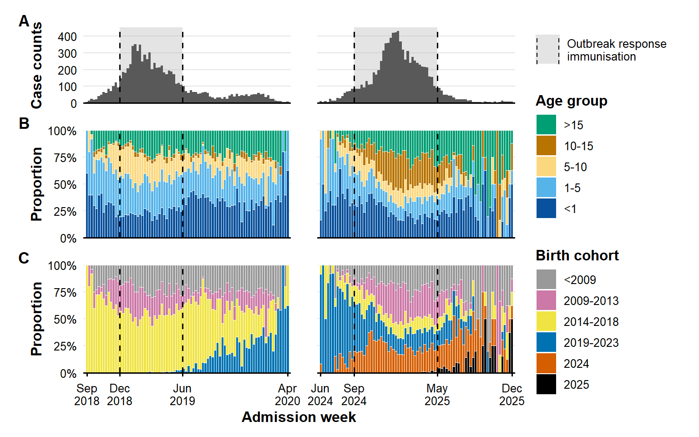
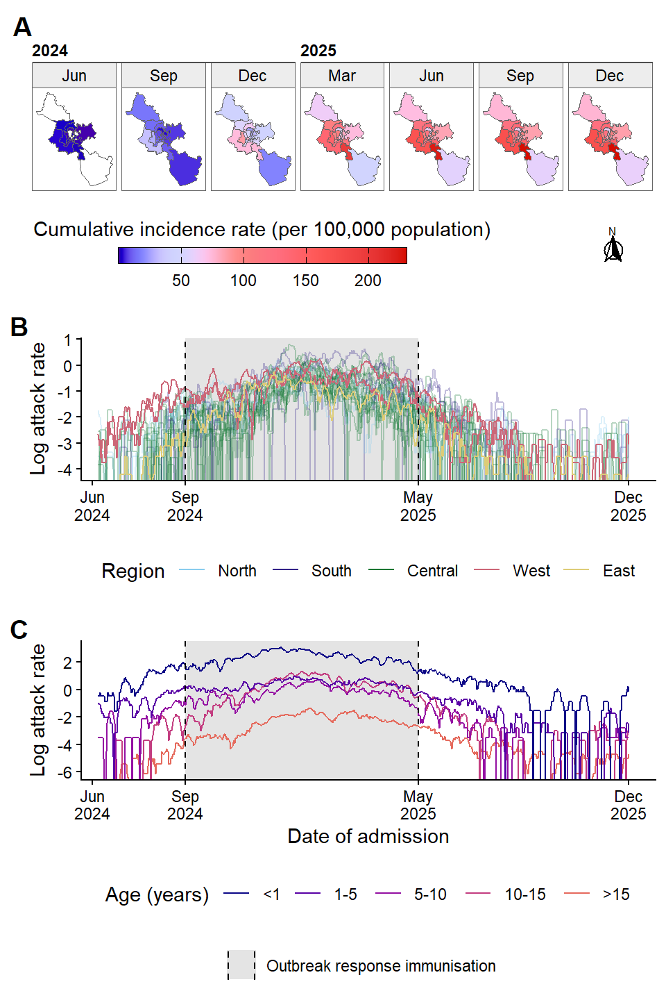
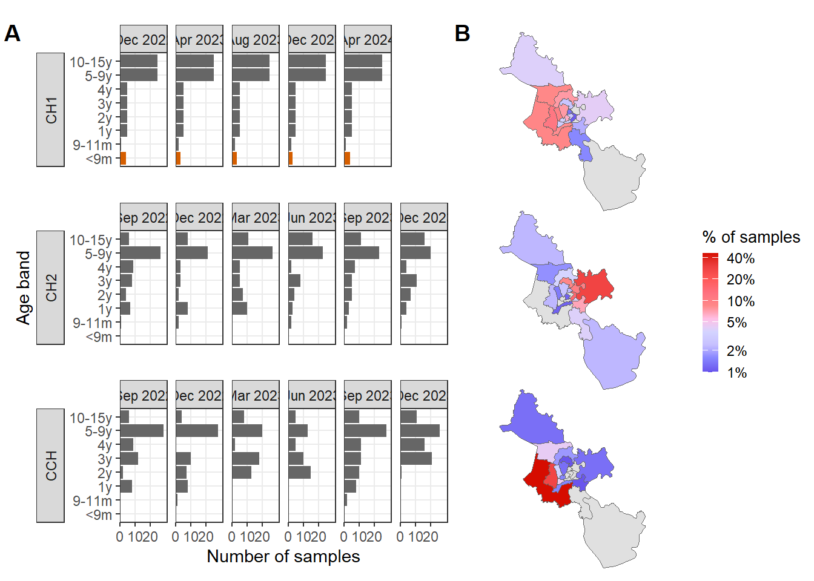
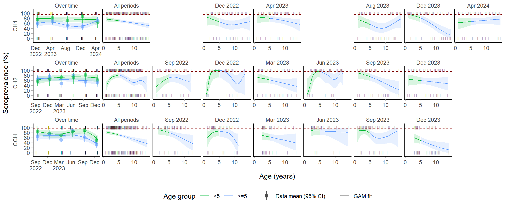
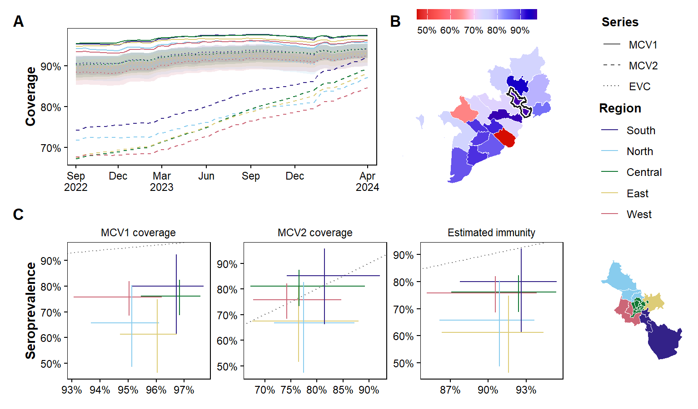
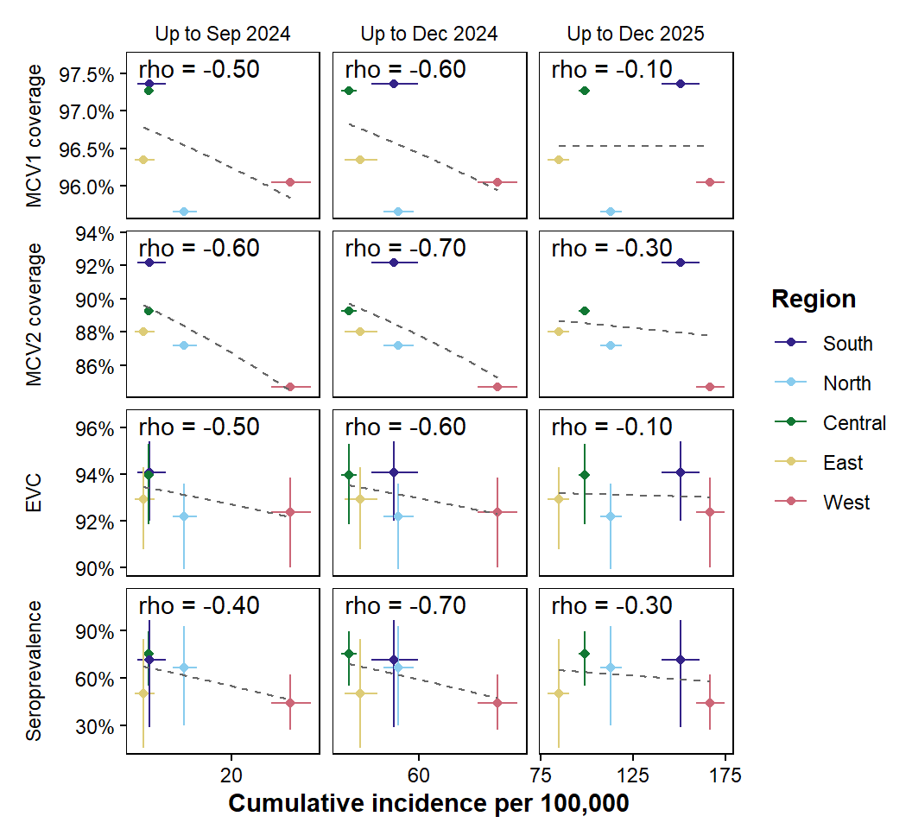
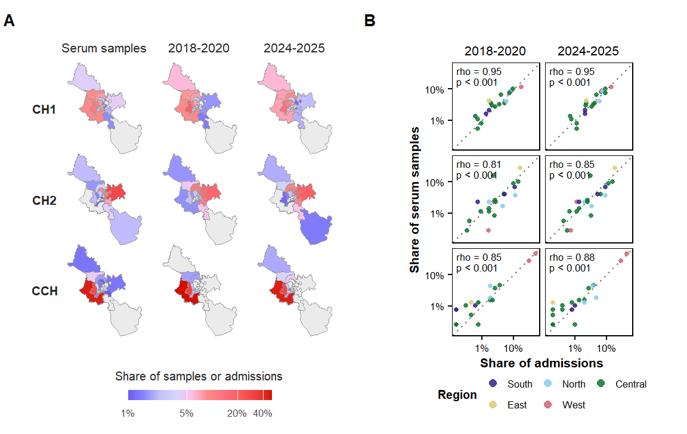

path2data <- paste0("C:/Users/ongph/github/data/dphil")Result 1: Serosurveillance
Constant
Path to data:
Files names:
# Case notification
cases_file <- "measles_hcmc_18-25.rds"
cases_neg_file <- "measles_hcmc_18-25_neg.rds"
# Serology
sero_file <- "measles_elisa_hcmc_children.rds"
# Vaccination coverage
## HCMC
vax_hcmc_file <- "vaxreg_hcmc_measles.rds"
## Vietnam
vax_vn_file <- "vaxvn_2023.xlsx"
# Population metadata
map_hcmc_file <- "gadm41_hcmc_district.rds"
map_vn_file <- "gadm41_vn.rds"
census_file <- "census2019_hcm.rds"Packages
Required packages:
required <- c("openxlsx", "janitor", "tidyverse", "scales", "mgcv", "stringi", "sf", "binom", "ggsci", "ggspatial", "patchwork", "zoo", "slider", "cowplot", "ggh4x", "gtable", "grid", "SHELF")
# Installing those that are not installed yet:
to_install <- required[! required %in% installed.packages()[, "Package"]]
if (length(to_install)) install.packages(to_install)
# Loading the packages for interactive use:
invisible(sapply(required, library, character.only = TRUE))
source("code/prop_query.R")Functions
Clean Vietnamese district and province name
clean_district <- function(x) {
x |>
stri_trans_general("Latin-ASCII") |>
str_to_lower() |>
str_squish() |>
str_replace_all("đ", "d") |>
str_remove("^(quan |huyen |thanh pho |tp )")
}
clean_province <- function(x) {
x |>
stri_trans_general("Latin-ASCII") |>
str_to_lower() |>
str_squish() |>
str_replace_all("đ", "d")
}
# Merge D2 and Đ into Thu Duc
thuduc_parts <- c("2", "9", "thu duc")
merge_thuduc <- function(x) if_else(x %in% thuduc_parts, "thu duc", x)Correct seroprevalence by sensitivity and specificity
clamp01 <- function(x) pmin(pmax(x, 0), 1)
# Rogan-Gladen correction for test sensitivity and specificity
prev_correct <- function(x) clamp01((x + spec - 1) / (sens + spec - 1))
# Wilson score interval with continuity correction, same as prop.test()
prop_ci <- function(x, n) {
map2(x, n, \(a, b) as_tibble_row(set_names(prop.test(a, b)$conf.int,
c("ci_lwr", "ci_upr")))) |>
list_rbind()
}
# df.residual comes from the effective degrees of freedom, so penalised
# smooths are counted correctly
predict_ci <- function(model, data, var, ci = 0.95) {
tq <- qt(1 - (1 - ci) / 2, model$df.residual)
rng <- range(data[[var]], na.rm = TRUE)
newd <- tibble(!!var := seq(rng[1], rng[2], length.out = n_grid))
pr <- predict(model, newdata = newd, se.fit = TRUE, type = "link")
inv <- model$family$linkinv
newd |>
mutate(fit_true = prev_correct(inv(pr$fit)),
lwr_true = prev_correct(inv(pr$fit - tq * pr$se.fit)),
upr_true = prev_correct(inv(pr$fit + tq * pr$se.fit)))
}Predict with confidence interval
sero_ci <- function(df, key) {
df |>
summarise(n_sero = n(), x_pos = sum(pos), .by = all_of(key)) |>
mutate(
sero = x_pos / n_sero,
sero_lo = if_else(x_pos == 0, 0, qbeta(0.025, x_pos, n_sero - x_pos + 1)),
sero_hi = if_else(x_pos == n_sero, 1, qbeta(0.975, x_pos + 1, n_sero - x_pos))
) |>
rename(group = all_of(key))
}
sero_for <- function(lo, hi) {
d <- sero_src |> filter(age_y >= lo, age_y < hi)
bind_rows(
sero_ci(d, "district") |>
mutate(group = as.character(group), level = "District"),
sero_ci(mutate(d, region = as.character(region)), "region") |>
mutate(level = "Region")
)
}Turn districts to regions:
district_region <- tribble(
~district, ~region,
"binh chanh", "West",
"binh tan", "West",
"12", "North",
"hoc mon", "North",
"cu chi", "North",
"thu duc", "East",
"2", "East",
"9", "East",
"7", "South",
"nha be", "South",
"can gio", "South",
"1", "Central",
"3", "Central",
"4", "Central",
"5", "Central",
"6", "Central",
"8", "Central",
"10", "Central",
"11", "Central",
"binh thanh", "Central",
"go vap", "Central",
"phu nhuan", "Central",
"tan binh", "Central",
"tan phu", "Central"
)
lv_region <- c("West", "North", "East", "South", "Central")Data
Map:
df_map_hcmc <- file.path(path2data, map_hcmc_file) |>
readRDS() |>
mutate(district_blank = clean_district(district))
df_map_vn <- file.path(path2data, map_vn_file) |>
readRDS() |>
mutate(province_blank = clean_province(province))Census:
df_census <- file.path(path2data, census_file) |>
readRDS()
df_census_age <- df_census |>
group_by(age) |>
summarise(n_census = sum(n), .groups = "drop")
df_census_district <- df_census |>
group_by(district) |>
summarise(n_census = sum(n), .groups = "drop") |>
mutate(
district = clean_district(district)
)Case report data:
df_case <- readRDS(file.path(path2data, cases_file))Serology:
df_sero <- file.path(path2data, sero_file) |>
readRDS() |>
mutate(district = clean_district(district))Vaccination coverage
df_vax_hcmc <- file.path(path2data, vax_hcmc_file) |>
readRDS() |>
mutate(district_blank = clean_district(district))
df_vax_vn <- file.path(path2data, vax_vn_file) |>
read.xlsx() |>
mutate(province_blank = clean_province(province))Analysis
Case data
Proportion by age and cohort
week_start <- 1 # 1 = ISO weeks (Monday), 7 = MMWR (Sunday)
ob_threshold <- 5 # admissions per week
ob_min_run <- 3 # consecutive weeks at or above the threshold
ob_max_gap <- 8 # weeks below threshold tolerated within one period
ob_min_cases <- 50 # smaller episodes treated as sporadic
shade_win <- tibble(
xmin = dmy(c("01-12-2018", "01-09-2024")),
xmax = dmy(c("31-05-2019", "30-04-2025"))
)
shade_label <- "Outbreak response\nimmunisation"
shade_fill <- "grey70"
shade_alpha <- 0.35
age_cols <- c(
"<1" = "#08519C", "1-5" = "#56B4E9", "5-10" = "#FBD87F",
"10-15" = "#B87400", ">15" = "#009E73"
)
cohort_cols <- c(
"<2009" = "#999999", "2009-2013" = "#CC79A7", "2014-2018" = "#F0E442",
"2019-2023" = "#0072B2", "2024" = "#D55E00", "2025" = "#000000"
)
df_week <- df_case |>
mutate(
week = floor_date(ngay_nv, "week", week_start = week_start),
age_group = factor(case_when(
age < 1 ~ "<1",
age < 5 ~ "1-5",
age < 10 ~ "5-10",
age <= 15 ~ "10-15",
age > 15 ~ ">15"
), levels = names(age_cols)),
birth_year = year(ngay_sinh),
cohort = factor(case_when(
birth_year < 2009 ~ "<2009",
birth_year < 2014 ~ "2009-2013",
birth_year < 2019 ~ "2014-2018",
birth_year < 2024 ~ "2019-2023",
birth_year == 2024 ~ "2024",
birth_year == 2025 ~ "2025"
), levels = names(cohort_cols))
) |>
drop_na(week)
# Quiet weeks must appear as zero, or a gap reads as continuous transmission
weekly_counts <- function(data) {
data |>
count(week, name = "cases") |>
complete(week = seq(min(week), max(week), by = "week"),
fill = list(cases = 0L))
}
find_outbreaks <- function(data, threshold = ob_threshold,
min_run = ob_min_run, max_gap = ob_max_gap) {
wc <- weekly_counts(data)
r <- rle(wc$cases >= threshold)
end <- cumsum(r$lengths)
hit <- which(r$values & r$lengths >= min_run)
if (length(hit) == 0) {
return(tibble(episode = integer(), start = wc$week[0], end = wc$week[0],
weeks = integer(), cases = integer()))
}
s <- (end - r$lengths + 1L)[hit]
e <- end[hit]
tibble(s, e, grp = cumsum(c(1L, (s[-1] - head(e, -1) - 1L) >= max_gap))) |>
summarise(i1 = min(s), i2 = max(e), .by = grp) |>
transmute(
episode = row_number(),
start = wc$week[i1],
end = wc$week[i2],
weeks = i2 - i1 + 1L,
cases = map2_int(i1, i2, \(a, b) sum(wc$cases[a:b])),
peak_week = map2_vec(i1, i2, \(a, b) wc$week[a:b][which.max(wc$cases[a:b])]),
peak_cases = map2_int(i1, i2, \(a, b) max(wc$cases[a:b]))
)
}
outbreak_sensitivity <- function(data, thresholds = c(3, 5, 10, 20, 30)) {
map(thresholds, \(x) find_outbreaks(data, threshold = x) |>
mutate(threshold = x, .before = 1)) |>
list_rbind()
}
episodes_all <- find_outbreaks(df_week)
episodes_all# A tibble: 2 × 7
episode start end weeks cases peak_week peak_cases
<int> <date> <date> <int> <int> <date> <int>
1 1 2018-08-27 2020-03-30 84 8437 2019-01-14 352
2 2 2024-05-27 2025-12-01 80 9061 2025-01-06 430outbreak_sensitivity(df_week)# A tibble: 10 × 8
threshold episode start end weeks cases peak_week peak_cases
<dbl> <int> <date> <date> <int> <int> <date> <int>
1 3 1 2018-08-27 2020-03-30 84 8437 2019-01-14 352
2 3 2 2024-05-27 2025-12-01 80 9061 2025-01-06 430
3 5 1 2018-08-27 2020-03-30 84 8437 2019-01-14 352
4 5 2 2024-05-27 2025-12-01 80 9061 2025-01-06 430
5 10 1 2018-09-03 2020-03-09 80 8414 2019-01-14 352
6 10 2 2024-06-24 2025-08-04 59 8911 2025-01-06 430
7 20 1 2018-09-10 2020-02-17 76 8363 2019-01-14 352
8 20 2 2024-07-15 2025-07-21 54 8828 2025-01-06 430
9 30 1 2018-10-01 2020-02-03 71 8247 2019-01-14 352
10 30 2 2024-07-29 2025-06-16 47 8660 2025-01-06 430episodes <- episodes_all |>
filter(cases >= ob_min_cases) |>
mutate(episode = row_number())
episodes# A tibble: 2 × 7
episode start end weeks cases peak_week peak_cases
<int> <date> <date> <int> <int> <date> <int>
1 1 2018-08-27 2020-03-30 84 8437 2019-01-14 352
2 2 2024-05-27 2025-12-01 80 9061 2025-01-06 430if (nrow(episodes) != 2) {
stop("Expected 2 outbreak periods, found ", nrow(episodes),
". Adjust ob_threshold, ob_max_gap or ob_min_cases.")
}
plot_start <- episodes$start[1]
gap_start <- episodes$end[1] + 7
gap_end <- episodes$start[2]
plot_end <- episodes$end[2]
df_plot <- df_week |>
filter(between(week, plot_start, plot_end),
week < gap_start | week >= gap_end) |>
mutate(period = factor(if_else(week < gap_start, "p1", "p2"), c("p1", "p2")))
df_week |>
summarise(
total = n(),
plotted = sum(between(week, plot_start, plot_end) &
(week < gap_start | week >= gap_end)),
before_p1 = sum(week < plot_start),
in_gap = sum(week >= gap_start & week < gap_end),
after_p2 = sum(week > plot_end),
no_age = sum(is.na(age_group)),
no_cohort = sum(is.na(cohort))
) total plotted before_p1 in_gap after_p2 no_age no_cohort
1 17612 17498 21 93 0 0 0# 4 days = half a bar width, so the outermost bars are not cut in half
period_range <- tibble(
period = factor(c("p1", "p2"), c("p1", "p2")),
start = c(plot_start, gap_end),
end = c(gap_start - 7, plot_end)
) |>
mutate(lo = start - 4, hi = end + 4)
anchors_f <- period_range |>
pivot_longer(c(lo, hi), values_to = "week")
shade_all <- shade_win |>
mutate(period = factor(if_else(xmin < gap_start, "p1", "p2"), c("p1", "p2")),
label = shade_label) |>
left_join(period_range, by = "period")
vline_f <- shade_all |>
pivot_longer(c(xmin, xmax), values_to = "x") |>
filter(x > lo, x < hi)
# Unclipped, shading past the panel limits would widen the scale and break
# the proportional panel widths
shade_f <- shade_all |>
mutate(xmin = pmax(xmin, lo), xmax = pmin(xmax, hi)) |>
filter(xmax > xmin)
draw_key_shade <- function(data, params, size) {
grid::grobTree(
grid::rectGrob(gp = grid::gpar(fill = alpha(shade_fill, shade_alpha), col = NA)),
grid::segmentsGrob(x0 = c(0.05, 0.95), x1 = c(0.05, 0.95), y0 = 0, y1 = 1,
gp = grid::gpar(col = "black", lty = "dashed"))
)
}
anchors <- geom_blank(data = anchors_f, aes(x = week), inherit.aes = FALSE)
# Only panel A maps fill, so only panel A produces a key
rect_keyed <- geom_rect(
data = shade_f,
aes(xmin = xmin, xmax = xmax, ymin = -Inf, ymax = Inf, fill = label),
inherit.aes = FALSE, alpha = shade_alpha, key_glyph = draw_key_shade
)
rect_plain <- geom_rect(
data = shade_f, aes(xmin = xmin, xmax = xmax, ymin = -Inf, ymax = Inf),
inherit.aes = FALSE, fill = shade_fill, alpha = shade_alpha
)
# space = "free_x" needs facet_grid, it is not available in facet_wrap
layers_fg <- list(
geom_vline(data = vline_f, aes(xintercept = x), inherit.aes = FALSE,
linetype = "dashed"),
facet_grid(cols = vars(period), scales = "free_x", space = "free_x")
)
axis_breaks <- sort(unique(c(period_range$start, period_range$end,
shade_win$xmin, shade_win$xmax)))
x_scale <- scale_x_date(
breaks = \(lim) axis_breaks[axis_breaks >= lim[1] & axis_breaks <= lim[2]],
labels = \(x) format(round_date(x, "month"), "%b\n%Y"),
minor_breaks = NULL,
expand = expansion(mult = 0.01)
)
base_theme <- theme_minimal(base_size = 12) +
theme(
panel.spacing.x = unit(1.5, "lines"),
panel.grid.major.x = element_blank(),
panel.grid.minor = element_blank(),
panel.grid.major.y = element_line(colour = "grey90", linewidth = 0.4),
axis.line.x = element_line(colour = "black", linewidth = 0.6),
axis.ticks.x = element_line(colour = "black"),
axis.text = element_text(colour = "black"),
axis.title = element_text(face = "bold"),
legend.title = element_text(face = "bold"),
strip.text = element_blank(),
plot.tag = element_text(face = "bold", size = 13),
plot.tag.position = "topleft",
plot.margin = margin(t = 5, r = 15, b = 5, l = 10)
)
drop_x <- theme(axis.title.x = element_blank(),
axis.text.x = element_blank(),
axis.ticks.x = element_blank())
prep_stack <- function(d, var) {
d |>
drop_na({{ var }}) |>
count(period, week, grp = {{ var }}) |>
mutate(prop = n / sum(n), .by = week)
}
stacked_panel <- function(d, cols, legend_title, reverse_stack, tag) {
ggplot(d, aes(x = week, y = prop)) +
rect_plain + anchors +
geom_col(aes(fill = grp), width = 7, colour = "white", linewidth = 0.2,
position = position_stack(reverse = reverse_stack)) +
layers_fg +
scale_fill_manual(values = cols) +
scale_y_continuous(labels = label_percent(), limits = c(0, 1),
breaks = seq(0, 1, by = 0.25), expand = c(0, 0)) +
x_scale +
labs(y = "Proportion", fill = legend_title, tag = tag) +
base_theme
}
pA <- ggplot(count(df_plot, period, week), aes(x = week, y = n)) +
rect_keyed + anchors +
geom_col(width = 7, fill = "grey35") +
layers_fg +
scale_fill_manual(
values = setNames(shade_fill, shade_label), name = NULL,
guide = guide_legend(keywidth = unit(20, "pt"), keyheight = unit(24, "pt"))
) +
scale_y_continuous(labels = label_comma(),
expand = expansion(mult = c(0, 0.05))) +
x_scale +
labs(y = "Case counts", tag = "A") +
base_theme + drop_x
pB <- stacked_panel(prep_stack(df_plot, age_group), age_cols, "Age group",
reverse_stack = TRUE, tag = "B") +
guides(fill = guide_legend(reverse = TRUE)) +
drop_x
pC <- stacked_panel(prep_stack(df_plot, cohort), cohort_cols, "Birth cohort",
reverse_stack = FALSE, tag = "C") +
labs(x = "Admission week")
fig <- pA / pB / pC +
plot_layout(heights = c(0.7, 1, 1), guides = "collect") &
theme(legend.position = "right",
legend.justification = "top",
legend.box.just = "left",
legend.spacing.y = unit(12, "pt"))
fig
# ggsave("figs/chap1/case_age_cohort.png", fig,
# width = 8, height = 5, dpi = 300, bg = "white")2024-2025
ma_days <- 7
snapshot_unit <- "quarter"
age_levels <- names(age_cols)
ori_label <- "Outbreak response immunisation"
district_pals <- c(
"West" = "#CC6677",
"North" = "#88CCEE",
"East" = "#DDCC77",
"South" = "#332288",
"Central" = "#117733"
)
df_ep2 <- df_week |>
filter(between(week, episodes$start[2], episodes$end[2])) |>
mutate(date = ngay_nv)
census_dist <- df_census_district |>
mutate(district = merge_thuduc(district)) |>
summarise(n_census = sum(n_census), .by = district)
map_dist <- df_map_hcmc |>
mutate(district = merge_thuduc(district_blank)) |>
select(district)
date_grid <- seq(min(df_ep2$date), max(df_ep2$date), by = "day")
ori_win <- shade_win |>
filter(xmax >= min(date_grid), xmin <= max(date_grid)) |>
mutate(xmin = pmax(xmin, min(date_grid)), xmax = pmin(xmax, max(date_grid)))
ori_bounds <- c(shade_win$xmin, shade_win$xmax)
ori_lines <- ori_bounds[ori_bounds > min(date_grid) & ori_bounds < max(date_grid)]
# Drawn before the lines so the shading sits behind them
shade_layer <- geom_rect(
data = ori_win, aes(xmin = xmin, xmax = xmax, ymin = -Inf, ymax = Inf),
inherit.aes = FALSE, fill = shade_fill, alpha = shade_alpha
)
shade_layer_keyed <- geom_rect(
data = mutate(ori_win, label = ori_label),
aes(xmin = xmin, xmax = xmax, ymin = -Inf, ymax = Inf, fill = label),
inherit.aes = FALSE, alpha = shade_alpha, key_glyph = draw_key_shade
)
vline_layer <- geom_vline(xintercept = ori_lines, linetype = "dashed")
axis_breaks_ep2 <- sort(unique(c(range(date_grid), ori_lines)))
x_scale_ep2 <- scale_x_date(
breaks = \(lim) axis_breaks_ep2[axis_breaks_ep2 >= lim[1] &
axis_breaks_ep2 <= lim[2]],
labels = \(x) format(round_date(x, "month"), "%b\n%Y"),
minor_breaks = NULL,
expand = expansion(mult = c(0.02, 0.05))
)
# Days with no cases anywhere are absent from count(); without completing them
# the cumulative sums and moving averages skip those days entirely
daily_dist <- df_ep2 |>
drop_na(district) |>
count(district, date) |>
complete(district = census_dist$district, date = date_grid, fill = list(n = 0))
panel_theme <- theme_classic() +
theme(legend.position = "bottom",
plot.tag = element_text(face = "bold", size = 14))
snapshot_dist <- daily_dist |>
mutate(bin = floor_date(date, snapshot_unit)) |>
summarise(n = sum(n), .by = c(district, bin)) |>
arrange(district, bin) |>
mutate(cum_n = cumsum(n), .by = district) |>
left_join(census_dist, by = "district") |>
mutate(
cum_inc = na_if(1e5 * cum_n / n_census, 0),
bin_end = pmin(ceiling_date(bin, snapshot_unit) - 1, max(date_grid)),
yr = factor(year(bin_end)),
# Levels from month.abb, not order of appearance: Jun occurs in both years
mo = factor(format(bin_end, "%b"), levels = month.abb)
)
map_snapshot <- map_dist |>
left_join(snapshot_dist, by = "district")
p_arrow <- ggplot() +
annotation_north_arrow(
location = "tr", which_north = "grid",
height = unit(7, "mm"), width = unit(6, "mm"),
style = north_arrow_fancy_orienteering(text_size = 6)
) +
coord_cartesian(xlim = c(0, 1), ylim = c(0, 1), clip = "off") +
theme_void() +
theme(plot.margin = margin(4, 4, 4, 4))
pA <- ggplot(map_snapshot) +
geom_sf(aes(fill = cum_inc), colour = "grey40", linewidth = 0.15) +
scale_fill_gsea(
rescaler = \(x, to = c(0, 1), from = NULL) rescale(sqrt(x)),
na.value = "white",
guide = guide_colourbar(
title.position = "top", title.hjust = 0.5,
barwidth = unit(55, "mm"), barheight = unit(3, "mm"),
frame.colour = "black", frame.linewidth = 0.3, ticks.colour = "black"
)
) +
# Outer strip spans the panels sharing a year, inner strip gives the month
facet_nested_wrap(
vars(yr, mo), nrow = 1,
nest_line = element_line(colour = "grey30", linewidth = 0.4),
strip = strip_nested(
background_x = list(
element_blank(),
element_rect(fill = "grey93", colour = "grey40", linewidth = 0.3)
),
text_x = list(
element_text(hjust = 0, face = "bold", colour = "black",
margin = margin(t = 2, b = 3)),
element_text(hjust = 0.5, colour = "black",
margin = margin(t = 2, b = 3))
),
by_layer_x = TRUE
)
) +
labs(fill = "Cumulative incidence rate (per 100,000 population)", tag = "A") +
theme_bw(base_size = 11) +
theme(
legend.position = "bottom",
legend.justification = "left",
legend.margin = margin(t = 4, b = 0),
legend.title = element_text(hjust = 0),
axis.title = element_blank(),
axis.text = element_blank(),
axis.ticks = element_blank(),
axis.ticks.length = unit(0, "pt"),
panel.grid = element_blank(),
panel.border = element_rect(colour = "grey40", linewidth = 0.3, fill = NA),
panel.spacing.x = unit(3, "pt"),
plot.tag = element_text(face = "bold", size = 14),
plot.margin = margin(2, 2, 2, 2)
) +
inset_element(p_arrow, left = 0.88, bottom = 0.06, right = 0.99, top = 0.30,
align_to = "full", clip = FALSE)
# pA# rate = cases on day t / (population - cumulative cases up to day t-1).
# A daily hazard among those not yet recorded as cases, not a cumulative
# attack rate; name it accordingly in the caption.
add_attack_rate <- function(d, group, n_days = ma_days) {
d |>
arrange({{ group }}, date) |>
mutate(
at_risk = n_census - lag(cumsum(n), default = 0),
rate = n / at_risk,
rate_ma = slide_mean(rate, before = n_days - 1, complete = TRUE),
.by = {{ group }}
)
}
rate_dist <- daily_dist |>
left_join(census_dist, by = "district") |>
add_attack_rate(district) |>
left_join(district_region, by = "district") |>
mutate(region = factor(region, levels = lv_region))
# CHECK: districts with cases but no census population drop out of the panel.
# Should be empty. Districts 2 or 9 here mean merge_thuduc() was not applied.
rate_dist |> filter(is.na(n_census)) |> distinct(district)# A tibble: 0 × 1
# ℹ 1 variable: district <chr># log() of a zero moving average returns -Inf, which ggplot drops with a
# warning. Count them so the gaps in the lines are expected.
cat("District days with a zero moving average:",
sum(rate_dist$rate_ma == 0, na.rm = TRUE), "\n")District days with a zero moving average: 4026 # Layer order sets which line is drawn on top: faded regions first, then West,
# then East last so no other line covers it
pB <- rate_dist |>
ggplot(aes(x = date, y = log(rate_ma * 1e5), group = district,
colour = region)) +
shade_layer +
geom_line(data = \(d) filter(d, !region %in% c("West", "East")), alpha = 0.3) +
geom_line(data = \(d) filter(d, region == "West")) +
geom_line(data = \(d) filter(d, region == "East")) +
vline_layer +
scale_colour_manual(values = district_pals) +
# legend keys at full colour, not the faded version
guides(colour = guide_legend(override.aes = list(alpha = 1))) +
x_scale_ep2 +
labs(x = NULL, y = "Log attack rate", colour = "Region", tag = "B") +
panel_theme
# pB# Same case_when as df_week, so denominator bands match numerator bands. A
# parallel cut() with right = TRUE would shift every boundary by one year.
# Census codes age 1 as under 1, so census age n is completed age n - 1.
age_cols <- set_names(viridisLite::plasma(5, begin = 0, end = 0.62),
c("<1", "1-5", "5-10", "10-15", ">15"))
census_age <- df_census |>
mutate(
age_years = age - 1,
age_group = factor(case_when(
age_years < 1 ~ "<1",
age_years < 5 ~ "1-5",
age_years < 10 ~ "5-10",
age_years <= 15 ~ "10-15",
age_years > 15 ~ ">15"
), levels = age_levels)
) |>
summarise(n_census = sum(n), .by = age_group)
census_age# A tibble: 5 × 2
age_group n_census
<fct> <dbl>
1 <1 69253
2 1-5 333306
3 5-10 485167
4 10-15 591864
5 >15 6589223rate_age <- df_ep2 |>
drop_na(age_group) |>
count(age_group, date) |>
complete(age_group, date = date_grid, fill = list(n = 0)) |>
left_join(census_age, by = "age_group") |>
add_attack_rate(age_group)
# fct_rev draws <1 last, so the darkest line sits on top
pC <- rate_age |>
mutate(age_group = fct_rev(age_group)) |>
ggplot(aes(x = date, y = log(rate_ma * 1e5), colour = age_group)) +
shade_layer_keyed +
geom_line() +
vline_layer +
scale_colour_manual(values = age_cols) +
scale_fill_manual(
values = setNames(shade_fill, ori_label), name = NULL,
guide = guide_legend(order = 2, keywidth = unit(16, "pt"),
keyheight = unit(16, "pt"))
) +
x_scale_ep2 +
guides(colour = guide_legend(reverse = TRUE, order = 1)) +
labs(x = "Date of admission", y = "Log attack rate", colour = "Age (years)",
tag = "C") +
panel_theme +
theme(legend.box = "vertical")
# pCfig_ep2 <- plot_grid(pA, pB, pC, ncol = 1, rel_heights = c(1, 1, 1.3))Warning: Removed 114 rows containing missing values or values outside the scale range
(`geom_line()`).Warning: Removed 12 rows containing missing values or values outside the scale range
(`geom_line()`).Warning: Removed 6 rows containing missing values or values outside the scale range
(`geom_line()`).Warning: Removed 30 rows containing missing values or values outside the scale range
(`geom_line()`).fig_ep2
# ggsave("figs/chap1/ep2_spatial_attack.png", fig_ep2,
# width = 5, height = 7.5, dpi = 500, bg = "white")Values cases
options(tibble.print_max = Inf)
pc <- \(x) sprintf("%.1f", 100 * x)
# Case totals are quoted in the text, so settle this first. Keep dedupe FALSE
# if the figure was built from the un-deduplicated frame, so text and figure
# agree; if TRUE, the figure must be rebuilt too.
df_week |>
summarise(rows = n(), ids = n_distinct(id), repeated_ids = sum(duplicated(id))) rows ids repeated_ids
1 17612 17481 131dedupe <- FALSE
cases <- if (dedupe) distinct(df_week, id, .keep_all = TRUE) else df_week
ep_win <- episodes |>
select(start, end, weeks) |>
mutate(episode = str_c(year(start), "-", year(end)), .before = 1)
ep_win |> mutate(months = weeks * 7 / 30.44)# A tibble: 2 × 5
episode start end weeks months
<chr> <date> <date> <int> <dbl>
1 2018-2020 2018-08-27 2020-03-30 84 19.3
2 2024-2025 2024-05-27 2025-12-01 80 18.4ep_cases <- cases |>
inner_join(select(ep_win, episode, start, end),
by = join_by(between(week, start, end))) |>
mutate(month = floor_date(week, "month"))
ep_totals <- ep_cases |> summarise(n = n(), .by = c(episode, start, end))
ep_totals episode start end n
1 2018-2020 2018-08-27 2020-03-30 8437
2 2024-2025 2024-05-27 2025-12-01 9061# weekly peak: date and size
ep_cases |>
count(episode, week) |>
slice_max(n, n = 1, by = episode, with_ties = FALSE) episode week n
1 2018-2020 2019-01-14 352
2 2024-2025 2025-01-06 430# cases between the two outbreaks
cases |>
filter(week > ep_win$end[1], week < ep_win$start[2]) |>
summarise(n = n(), first = min(week), last = max(week),
weeks_with_cases = n_distinct(week)) n first last weeks_with_cases
1 93 2020-04-06 2024-05-20 65# <5 = "<1" + "1-5"; <10 adds "5-10"
age_mo <- ep_cases |>
drop_na(age_group) |>
summarise(n_tot = n(),
n_u1 = sum(age_group == "<1"),
n_u5 = sum(age_group %in% c("<1", "1-5")),
n_u10 = sum(age_group %in% c("<1", "1-5", "5-10")),
.by = c(episode, month)) |>
mutate(pct_u1 = n_u1 / n_tot, pct_u5 = n_u5 / n_tot, pct_u10 = n_u10 / n_tot) |>
arrange(episode, month)
age_mo episode month n_tot n_u1 n_u5 n_u10 pct_u1 pct_u5 pct_u10
1 2018-2020 2018-08-01 5 3 5 5 0.6000000 1.0000000 1.0000000
2 2018-2020 2018-09-01 82 28 63 71 0.3414634 0.7682927 0.8658537
3 2018-2020 2018-10-01 300 99 213 243 0.3300000 0.7100000 0.8100000
4 2018-2020 2018-11-01 388 99 239 338 0.2551546 0.6159794 0.8711340
5 2018-2020 2018-12-01 951 203 548 803 0.2134595 0.5762355 0.8443743
6 2018-2020 2019-01-01 1354 294 645 1053 0.2171344 0.4763663 0.7776957
7 2018-2020 2019-02-01 1103 272 608 814 0.2466002 0.5512239 0.7379873
8 2018-2020 2019-03-01 864 168 426 631 0.1944444 0.4930556 0.7303241
9 2018-2020 2019-04-01 963 239 538 735 0.2481828 0.5586708 0.7632399
10 2018-2020 2019-05-01 518 142 299 395 0.2741313 0.5772201 0.7625483
11 2018-2020 2019-06-01 309 116 192 232 0.3754045 0.6213592 0.7508091
12 2018-2020 2019-07-01 308 124 215 240 0.4025974 0.6980519 0.7792208
13 2018-2020 2019-08-01 198 72 131 152 0.3636364 0.6616162 0.7676768
14 2018-2020 2019-09-01 147 51 85 108 0.3469388 0.5782313 0.7346939
15 2018-2020 2019-10-01 161 48 95 119 0.2981366 0.5900621 0.7391304
16 2018-2020 2019-11-01 188 61 106 141 0.3244681 0.5638298 0.7500000
17 2018-2020 2019-12-01 246 72 140 178 0.2926829 0.5691057 0.7235772
18 2018-2020 2020-01-01 202 67 103 146 0.3316832 0.5099010 0.7227723
19 2018-2020 2020-02-01 110 30 63 78 0.2727273 0.5727273 0.7090909
20 2018-2020 2020-03-01 40 19 31 31 0.4750000 0.7750000 0.7750000
21 2024-2025 2024-05-01 12 2 11 12 0.1666667 0.9166667 1.0000000
22 2024-2025 2024-06-01 49 19 39 46 0.3877551 0.7959184 0.9387755
23 2024-2025 2024-07-01 126 55 97 111 0.4365079 0.7698413 0.8809524
24 2024-2025 2024-08-01 286 103 194 240 0.3601399 0.6783217 0.8391608
25 2024-2025 2024-09-01 458 142 257 350 0.3100437 0.5611354 0.7641921
26 2024-2025 2024-10-01 536 204 316 386 0.3805970 0.5895522 0.7201493
27 2024-2025 2024-11-01 930 299 435 526 0.3215054 0.4677419 0.5655914
28 2024-2025 2024-12-01 1947 448 702 945 0.2300976 0.3605547 0.4853621
29 2024-2025 2025-01-01 1377 251 422 629 0.1822803 0.3064633 0.4567901
30 2024-2025 2025-02-01 1082 207 373 504 0.1913124 0.3447320 0.4658041
31 2024-2025 2025-03-01 1115 213 406 543 0.1910314 0.3641256 0.4869955
32 2024-2025 2025-04-01 505 100 192 237 0.1980198 0.3801980 0.4693069
33 2024-2025 2025-05-01 261 62 107 138 0.2375479 0.4099617 0.5287356
34 2024-2025 2025-06-01 165 45 89 103 0.2727273 0.5393939 0.6242424
35 2024-2025 2025-07-01 81 28 40 44 0.3456790 0.4938272 0.5432099
36 2024-2025 2025-08-01 35 11 18 20 0.3142857 0.5142857 0.5714286
37 2024-2025 2025-09-01 30 9 13 13 0.3000000 0.4333333 0.4333333
38 2024-2025 2025-10-01 20 4 6 8 0.2000000 0.3000000 0.4000000
39 2024-2025 2025-11-01 38 5 14 20 0.1315789 0.3684211 0.5263158
40 2024-2025 2025-12-01 8 4 5 5 0.5000000 0.6250000 0.6250000# the specific window in your draft: May to July 2024
age_mo |>
filter(between(month, ymd("2024-05-01"), ymd("2024-07-01"))) |>
summarise(n_tot = sum(n_tot),
pct_u5 = sum(n_u5) / sum(n_tot),
pct_u10 = sum(n_u10) / sum(n_tot)) n_tot pct_u5 pct_u10
1 187 0.7860963 0.9037433# first three months of each outbreak, for the parallel claim
age_mo |>
slice_head(n = 3, by = episode) |>
summarise(n_tot = sum(n_tot),
pct_u5 = sum(n_u5) / sum(n_tot),
pct_u10 = sum(n_u10) / sum(n_tot),
.by = episode) episode n_tot pct_u5 pct_u10
1 2018-2020 387 0.7260982 0.8242894
2 2024-2025 187 0.7860963 0.9037433# full age breakdown over the same three months
ep_cases |>
filter(month <= min(month) %m+% months(2), .by = episode) |>
count(episode, age_group) |>
mutate(pct = n / sum(n), .by = episode) episode age_group n pct
1 2018-2020 <1 130 0.33591731
2 2018-2020 1-5 151 0.39018088
3 2018-2020 5-10 38 0.09819121
4 2018-2020 10-15 11 0.02842377
5 2018-2020 >15 57 0.14728682
6 2024-2025 <1 76 0.40641711
7 2024-2025 1-5 71 0.37967914
8 2024-2025 5-10 22 0.11764706
9 2024-2025 10-15 6 0.03208556
10 2024-2025 >15 12 0.06417112coh_mo <- ep_cases |>
drop_na(cohort) |>
count(episode, month, cohort) |>
mutate(n_tot = sum(n), pct = n / sum(n), .by = c(episode, month)) |>
arrange(episode, month, desc(pct))
coh_mo |>
mutate(lab = sprintf("%s%% (%d/%d)", pc(pct), n, n_tot)) |>
select(episode, month, cohort, lab) episode month cohort lab
1 2018-2020 2018-08-01 2014-2018 100.0% (5/5)
2 2018-2020 2018-09-01 2014-2018 76.8% (63/82)
3 2018-2020 2018-09-01 <2009 13.4% (11/82)
4 2018-2020 2018-09-01 2009-2013 9.8% (8/82)
5 2018-2020 2018-10-01 2014-2018 70.7% (212/300)
6 2018-2020 2018-10-01 <2009 19.3% (58/300)
7 2018-2020 2018-10-01 2009-2013 10.0% (30/300)
8 2018-2020 2018-11-01 2014-2018 60.1% (233/388)
9 2018-2020 2018-11-01 2009-2013 27.1% (105/388)
10 2018-2020 2018-11-01 <2009 12.9% (50/388)
11 2018-2020 2018-12-01 2014-2018 57.4% (546/951)
12 2018-2020 2018-12-01 2009-2013 27.0% (257/951)
13 2018-2020 2018-12-01 <2009 15.6% (148/951)
14 2018-2020 2019-01-01 2014-2018 47.8% (647/1354)
15 2018-2020 2019-01-01 2009-2013 30.1% (407/1354)
16 2018-2020 2019-01-01 <2009 22.1% (299/1354)
17 2018-2020 2019-01-01 2019-2023 0.1% (1/1354)
18 2018-2020 2019-02-01 2014-2018 55.1% (608/1103)
19 2018-2020 2019-02-01 <2009 25.6% (282/1103)
20 2018-2020 2019-02-01 2009-2013 19.0% (210/1103)
21 2018-2020 2019-02-01 2019-2023 0.3% (3/1103)
22 2018-2020 2019-03-01 2014-2018 49.9% (431/864)
23 2018-2020 2019-03-01 <2009 26.4% (228/864)
24 2018-2020 2019-03-01 2009-2013 23.6% (204/864)
25 2018-2020 2019-03-01 2019-2023 0.1% (1/864)
26 2018-2020 2019-04-01 2014-2018 56.2% (541/963)
27 2018-2020 2019-04-01 <2009 22.9% (221/963)
28 2018-2020 2019-04-01 2009-2013 20.0% (193/963)
29 2018-2020 2019-04-01 2019-2023 0.8% (8/963)
30 2018-2020 2019-05-01 2014-2018 56.2% (291/518)
31 2018-2020 2019-05-01 <2009 23.7% (123/518)
32 2018-2020 2019-05-01 2009-2013 18.0% (93/518)
33 2018-2020 2019-05-01 2019-2023 2.1% (11/518)
34 2018-2020 2019-06-01 2014-2018 61.5% (190/309)
35 2018-2020 2019-06-01 <2009 24.6% (76/309)
36 2018-2020 2019-06-01 2009-2013 10.7% (33/309)
37 2018-2020 2019-06-01 2019-2023 3.2% (10/309)
38 2018-2020 2019-07-01 2014-2018 65.6% (202/308)
39 2018-2020 2019-07-01 <2009 21.4% (66/308)
40 2018-2020 2019-07-01 2009-2013 6.8% (21/308)
41 2018-2020 2019-07-01 2019-2023 6.2% (19/308)
42 2018-2020 2019-08-01 2014-2018 56.1% (111/198)
43 2018-2020 2019-08-01 <2009 22.7% (45/198)
44 2018-2020 2019-08-01 2019-2023 12.6% (25/198)
45 2018-2020 2019-08-01 2009-2013 8.6% (17/198)
46 2018-2020 2019-09-01 2014-2018 35.4% (52/147)
47 2018-2020 2019-09-01 <2009 25.2% (37/147)
48 2018-2020 2019-09-01 2019-2023 24.5% (36/147)
49 2018-2020 2019-09-01 2009-2013 15.0% (22/147)
50 2018-2020 2019-10-01 2014-2018 42.2% (68/161)
51 2018-2020 2019-10-01 <2009 25.5% (41/161)
52 2018-2020 2019-10-01 2019-2023 17.4% (28/161)
53 2018-2020 2019-10-01 2009-2013 14.9% (24/161)
54 2018-2020 2019-11-01 2014-2018 36.2% (68/188)
55 2018-2020 2019-11-01 2019-2023 25.0% (47/188)
56 2018-2020 2019-11-01 <2009 23.4% (44/188)
57 2018-2020 2019-11-01 2009-2013 15.4% (29/188)
58 2018-2020 2019-12-01 2014-2018 30.9% (76/246)
59 2018-2020 2019-12-01 2019-2023 28.5% (70/246)
60 2018-2020 2019-12-01 <2009 26.4% (65/246)
61 2018-2020 2019-12-01 2009-2013 14.2% (35/246)
62 2018-2020 2020-01-01 2019-2023 35.1% (71/202)
63 2018-2020 2020-01-01 2009-2013 23.3% (47/202)
64 2018-2020 2020-01-01 <2009 22.8% (46/202)
65 2018-2020 2020-01-01 2014-2018 18.8% (38/202)
66 2018-2020 2020-02-01 2019-2023 31.8% (35/110)
67 2018-2020 2020-02-01 2014-2018 30.9% (34/110)
68 2018-2020 2020-02-01 <2009 28.2% (31/110)
69 2018-2020 2020-02-01 2009-2013 9.1% (10/110)
70 2018-2020 2020-03-01 2019-2023 65.0% (26/40)
71 2018-2020 2020-03-01 <2009 22.5% (9/40)
72 2018-2020 2020-03-01 2014-2018 12.5% (5/40)
73 2024-2025 2024-05-01 2019-2023 83.3% (10/12)
74 2024-2025 2024-05-01 2014-2018 8.3% (1/12)
75 2024-2025 2024-05-01 2024 8.3% (1/12)
76 2024-2025 2024-06-01 2019-2023 81.6% (40/49)
77 2024-2025 2024-06-01 2014-2018 14.3% (7/49)
78 2024-2025 2024-06-01 <2009 4.1% (2/49)
79 2024-2025 2024-07-01 2019-2023 66.7% (84/126)
80 2024-2025 2024-07-01 2014-2018 11.1% (14/126)
81 2024-2025 2024-07-01 2024 11.1% (14/126)
82 2024-2025 2024-07-01 <2009 7.9% (10/126)
83 2024-2025 2024-07-01 2009-2013 3.2% (4/126)
84 2024-2025 2024-08-01 2019-2023 59.4% (170/286)
85 2024-2025 2024-08-01 2014-2018 13.6% (39/286)
86 2024-2025 2024-08-01 2024 11.5% (33/286)
87 2024-2025 2024-08-01 <2009 10.1% (29/286)
88 2024-2025 2024-08-01 2009-2013 5.2% (15/286)
89 2024-2025 2024-09-01 2019-2023 40.0% (183/458)
90 2024-2025 2024-09-01 2024 19.0% (87/458)
91 2024-2025 2024-09-01 2014-2018 18.6% (85/458)
92 2024-2025 2024-09-01 <2009 14.8% (68/458)
93 2024-2025 2024-09-01 2009-2013 7.6% (35/458)
94 2024-2025 2024-10-01 2024 32.5% (174/536)
95 2024-2025 2024-10-01 2019-2023 29.7% (159/536)
96 2024-2025 2024-10-01 2009-2013 15.9% (85/536)
97 2024-2025 2024-10-01 2014-2018 11.2% (60/536)
98 2024-2025 2024-10-01 <2009 10.8% (58/536)
99 2024-2025 2024-11-01 2024 30.6% (285/930)
100 2024-2025 2024-11-01 2009-2013 24.6% (229/930)
101 2024-2025 2024-11-01 2019-2023 18.7% (174/930)
102 2024-2025 2024-11-01 <2009 17.2% (160/930)
103 2024-2025 2024-11-01 2014-2018 8.8% (82/930)
104 2024-2025 2024-12-01 2009-2013 31.4% (612/1947)
105 2024-2025 2024-12-01 2024 22.7% (442/1947)
106 2024-2025 2024-12-01 <2009 18.2% (355/1947)
107 2024-2025 2024-12-01 2019-2023 15.9% (309/1947)
108 2024-2025 2024-12-01 2014-2018 11.8% (229/1947)
109 2024-2025 2025-01-01 2009-2013 34.5% (475/1377)
110 2024-2025 2025-01-01 2024 18.8% (259/1377)
111 2024-2025 2025-01-01 <2009 17.8% (245/1377)
112 2024-2025 2025-01-01 2019-2023 15.0% (206/1377)
113 2024-2025 2025-01-01 2014-2018 13.9% (191/1377)
114 2024-2025 2025-01-01 2025 0.1% (1/1377)
115 2024-2025 2025-02-01 <2009 27.3% (295/1082)
116 2024-2025 2025-02-01 2009-2013 23.8% (258/1082)
117 2024-2025 2025-02-01 2024 20.9% (226/1082)
118 2024-2025 2025-02-01 2019-2023 16.8% (182/1082)
119 2024-2025 2025-02-01 2014-2018 11.1% (120/1082)
120 2024-2025 2025-02-01 2025 0.1% (1/1082)
121 2024-2025 2025-03-01 2009-2013 28.0% (312/1115)
122 2024-2025 2025-03-01 2024 21.4% (239/1115)
123 2024-2025 2025-03-01 <2009 20.3% (226/1115)
124 2024-2025 2025-03-01 2019-2023 17.8% (199/1115)
125 2024-2025 2025-03-01 2014-2018 12.1% (135/1115)
126 2024-2025 2025-03-01 2025 0.4% (4/1115)
127 2024-2025 2025-04-01 2009-2013 27.3% (138/505)
128 2024-2025 2025-04-01 <2009 23.6% (119/505)
129 2024-2025 2025-04-01 2024 22.2% (112/505)
130 2024-2025 2025-04-01 2019-2023 16.6% (84/505)
131 2024-2025 2025-04-01 2014-2018 8.9% (45/505)
132 2024-2025 2025-04-01 2025 1.4% (7/505)
133 2024-2025 2025-05-01 <2009 24.5% (64/261)
134 2024-2025 2025-05-01 2024 22.2% (58/261)
135 2024-2025 2025-05-01 2009-2013 19.9% (52/261)
136 2024-2025 2025-05-01 2019-2023 17.6% (46/261)
137 2024-2025 2025-05-01 2014-2018 11.1% (29/261)
138 2024-2025 2025-05-01 2025 4.6% (12/261)
139 2024-2025 2025-06-01 2024 32.7% (54/165)
140 2024-2025 2025-06-01 <2009 23.0% (38/165)
141 2024-2025 2025-06-01 2019-2023 21.2% (35/165)
142 2024-2025 2025-06-01 2009-2013 9.7% (16/165)
143 2024-2025 2025-06-01 2014-2018 9.1% (15/165)
144 2024-2025 2025-06-01 2025 4.2% (7/165)
145 2024-2025 2025-07-01 <2009 30.9% (25/81)
146 2024-2025 2025-07-01 2024 29.6% (24/81)
147 2024-2025 2025-07-01 2019-2023 12.3% (10/81)
148 2024-2025 2025-07-01 2009-2013 11.1% (9/81)
149 2024-2025 2025-07-01 2014-2018 8.6% (7/81)
150 2024-2025 2025-07-01 2025 7.4% (6/81)
151 2024-2025 2025-08-01 <2009 37.1% (13/35)
152 2024-2025 2025-08-01 2024 34.3% (12/35)
153 2024-2025 2025-08-01 2019-2023 11.4% (4/35)
154 2024-2025 2025-08-01 2025 8.6% (3/35)
155 2024-2025 2025-08-01 2014-2018 5.7% (2/35)
156 2024-2025 2025-08-01 2009-2013 2.9% (1/35)
157 2024-2025 2025-09-01 <2009 50.0% (15/30)
158 2024-2025 2025-09-01 2024 20.0% (6/30)
159 2024-2025 2025-09-01 2025 20.0% (6/30)
160 2024-2025 2025-09-01 2009-2013 3.3% (1/30)
161 2024-2025 2025-09-01 2014-2018 3.3% (1/30)
162 2024-2025 2025-09-01 2019-2023 3.3% (1/30)
163 2024-2025 2025-10-01 <2009 30.0% (6/20)
164 2024-2025 2025-10-01 2009-2013 25.0% (5/20)
165 2024-2025 2025-10-01 2014-2018 15.0% (3/20)
166 2024-2025 2025-10-01 2024 15.0% (3/20)
167 2024-2025 2025-10-01 2025 15.0% (3/20)
168 2024-2025 2025-11-01 <2009 34.2% (13/38)
169 2024-2025 2025-11-01 2014-2018 18.4% (7/38)
170 2024-2025 2025-11-01 2024 15.8% (6/38)
171 2024-2025 2025-11-01 2025 13.2% (5/38)
172 2024-2025 2025-11-01 2009-2013 10.5% (4/38)
173 2024-2025 2025-11-01 2019-2023 7.9% (3/38)
174 2024-2025 2025-12-01 2025 50.0% (4/8)
175 2024-2025 2025-12-01 <2009 12.5% (1/8)
176 2024-2025 2025-12-01 2009-2013 12.5% (1/8)
177 2024-2025 2025-12-01 2014-2018 12.5% (1/8)
178 2024-2025 2025-12-01 2024 12.5% (1/8)# leading cohort each month, which is the trajectory your text describes
coh_mo |>
slice_max(pct, n = 1, by = c(episode, month), with_ties = FALSE) |>
mutate(lab = sprintf("%s: %s%% (%d/%d)", cohort, pc(pct), n, n_tot)) |>
select(episode, month, n_tot, lab) episode month n_tot lab
1 2018-2020 2018-08-01 5 2014-2018: 100.0% (5/5)
2 2018-2020 2018-09-01 82 2014-2018: 76.8% (63/82)
3 2018-2020 2018-10-01 300 2014-2018: 70.7% (212/300)
4 2018-2020 2018-11-01 388 2014-2018: 60.1% (233/388)
5 2018-2020 2018-12-01 951 2014-2018: 57.4% (546/951)
6 2018-2020 2019-01-01 1354 2014-2018: 47.8% (647/1354)
7 2018-2020 2019-02-01 1103 2014-2018: 55.1% (608/1103)
8 2018-2020 2019-03-01 864 2014-2018: 49.9% (431/864)
9 2018-2020 2019-04-01 963 2014-2018: 56.2% (541/963)
10 2018-2020 2019-05-01 518 2014-2018: 56.2% (291/518)
11 2018-2020 2019-06-01 309 2014-2018: 61.5% (190/309)
12 2018-2020 2019-07-01 308 2014-2018: 65.6% (202/308)
13 2018-2020 2019-08-01 198 2014-2018: 56.1% (111/198)
14 2018-2020 2019-09-01 147 2014-2018: 35.4% (52/147)
15 2018-2020 2019-10-01 161 2014-2018: 42.2% (68/161)
16 2018-2020 2019-11-01 188 2014-2018: 36.2% (68/188)
17 2018-2020 2019-12-01 246 2014-2018: 30.9% (76/246)
18 2018-2020 2020-01-01 202 2019-2023: 35.1% (71/202)
19 2018-2020 2020-02-01 110 2019-2023: 31.8% (35/110)
20 2018-2020 2020-03-01 40 2019-2023: 65.0% (26/40)
21 2024-2025 2024-05-01 12 2019-2023: 83.3% (10/12)
22 2024-2025 2024-06-01 49 2019-2023: 81.6% (40/49)
23 2024-2025 2024-07-01 126 2019-2023: 66.7% (84/126)
24 2024-2025 2024-08-01 286 2019-2023: 59.4% (170/286)
25 2024-2025 2024-09-01 458 2019-2023: 40.0% (183/458)
26 2024-2025 2024-10-01 536 2024: 32.5% (174/536)
27 2024-2025 2024-11-01 930 2024: 30.6% (285/930)
28 2024-2025 2024-12-01 1947 2009-2013: 31.4% (612/1947)
29 2024-2025 2025-01-01 1377 2009-2013: 34.5% (475/1377)
30 2024-2025 2025-02-01 1082 <2009: 27.3% (295/1082)
31 2024-2025 2025-03-01 1115 2009-2013: 28.0% (312/1115)
32 2024-2025 2025-04-01 505 2009-2013: 27.3% (138/505)
33 2024-2025 2025-05-01 261 <2009: 24.5% (64/261)
34 2024-2025 2025-06-01 165 2024: 32.7% (54/165)
35 2024-2025 2025-07-01 81 <2009: 30.9% (25/81)
36 2024-2025 2025-08-01 35 <2009: 37.1% (13/35)
37 2024-2025 2025-09-01 30 <2009: 50.0% (15/30)
38 2024-2025 2025-10-01 20 <2009: 30.0% (6/20)
39 2024-2025 2025-11-01 38 <2009: 34.2% (13/38)
40 2024-2025 2025-12-01 8 2025: 50.0% (4/8)shade_win |>
mutate(days = as.numeric(xmax - xmin), months = days / 30.44)# A tibble: 2 × 4
xmin xmax days months
<date> <date> <dbl> <dbl>
1 2018-12-01 2019-05-31 181 5.95
2 2024-09-01 2025-04-30 241 7.92# n and n_tot are both returned: a rising share can occur while counts fall
coh_track <- function(coh, from, to) {
coh_mo |>
filter(cohort == coh, between(month, ymd(from), ymd(to))) |>
mutate(lab = sprintf("%s: %s%% (%d/%d)",
format(month, "%b %Y"), pc(pct), n, n_tot)) |>
select(month, n, n_tot, pct, lab)
}
coh_track("2019-2023", "2019-06-01", "2020-03-31") month n n_tot pct lab
1 2019-06-01 10 309 0.03236246 Jun 2019: 3.2% (10/309)
2 2019-07-01 19 308 0.06168831 Jul 2019: 6.2% (19/308)
3 2019-08-01 25 198 0.12626263 Aug 2019: 12.6% (25/198)
4 2019-09-01 36 147 0.24489796 Sep 2019: 24.5% (36/147)
5 2019-10-01 28 161 0.17391304 Oct 2019: 17.4% (28/161)
6 2019-11-01 47 188 0.25000000 Nov 2019: 25.0% (47/188)
7 2019-12-01 70 246 0.28455285 Dec 2019: 28.5% (70/246)
8 2020-01-01 71 202 0.35148515 Jan 2020: 35.1% (71/202)
9 2020-02-01 35 110 0.31818182 Feb 2020: 31.8% (35/110)
10 2020-03-01 26 40 0.65000000 Mar 2020: 65.0% (26/40)coh_track("2019-2023", "2024-05-01", "2024-08-31") month n n_tot pct lab
1 2024-05-01 10 12 0.8333333 May 2024: 83.3% (10/12)
2 2024-06-01 40 49 0.8163265 Jun 2024: 81.6% (40/49)
3 2024-07-01 84 126 0.6666667 Jul 2024: 66.7% (84/126)
4 2024-08-01 170 286 0.5944056 Aug 2024: 59.4% (170/286)coh_track("2024", "2024-09-01", "2025-12-31") month n n_tot pct lab
1 2024-09-01 87 458 0.1899563 Sep 2024: 19.0% (87/458)
2 2024-10-01 174 536 0.3246269 Oct 2024: 32.5% (174/536)
3 2024-11-01 285 930 0.3064516 Nov 2024: 30.6% (285/930)
4 2024-12-01 442 1947 0.2270159 Dec 2024: 22.7% (442/1947)
5 2025-01-01 259 1377 0.1880901 Jan 2025: 18.8% (259/1377)
6 2025-02-01 226 1082 0.2088725 Feb 2025: 20.9% (226/1082)
7 2025-03-01 239 1115 0.2143498 Mar 2025: 21.4% (239/1115)
8 2025-04-01 112 505 0.2217822 Apr 2025: 22.2% (112/505)
9 2025-05-01 58 261 0.2222222 May 2025: 22.2% (58/261)
10 2025-06-01 54 165 0.3272727 Jun 2025: 32.7% (54/165)
11 2025-07-01 24 81 0.2962963 Jul 2025: 29.6% (24/81)
12 2025-08-01 12 35 0.3428571 Aug 2025: 34.3% (12/35)
13 2025-09-01 6 30 0.2000000 Sep 2025: 20.0% (6/30)
14 2025-10-01 3 20 0.1500000 Oct 2025: 15.0% (3/20)
15 2025-11-01 6 38 0.1578947 Nov 2025: 15.8% (6/38)
16 2025-12-01 1 8 0.1250000 Dec 2025: 12.5% (1/8)coh_track("2025", "2025-01-01", "2025-12-31") month n n_tot pct lab
1 2025-01-01 1 1377 0.0007262164 Jan 2025: 0.1% (1/1377)
2 2025-02-01 1 1082 0.0009242144 Feb 2025: 0.1% (1/1082)
3 2025-03-01 4 1115 0.0035874439 Mar 2025: 0.4% (4/1115)
4 2025-04-01 7 505 0.0138613861 Apr 2025: 1.4% (7/505)
5 2025-05-01 12 261 0.0459770115 May 2025: 4.6% (12/261)
6 2025-06-01 7 165 0.0424242424 Jun 2025: 4.2% (7/165)
7 2025-07-01 6 81 0.0740740741 Jul 2025: 7.4% (6/81)
8 2025-08-01 3 35 0.0857142857 Aug 2025: 8.6% (3/35)
9 2025-09-01 6 30 0.2000000000 Sep 2025: 20.0% (6/30)
10 2025-10-01 3 20 0.1500000000 Oct 2025: 15.0% (3/20)
11 2025-11-01 5 38 0.1315789474 Nov 2025: 13.2% (5/38)
12 2025-12-01 4 8 0.5000000000 Dec 2025: 50.0% (4/8)ep_totals |>
mutate(txt = sprintf("%s outbreak: %s to %s, %d cases", episode,
format(start, "%B %Y"), format(end, "%B %Y"), n)) |>
pull(txt) |>
writeLines()2018-2020 outbreak: August 2018 to March 2020, 8437 cases
2024-2025 outbreak: May 2024 to December 2025, 9061 casesage_mo |>
filter(month %in% ymd(c("2018-09-01", "2024-05-01", "2024-06-01", "2024-07-01"))) |>
mutate(txt = sprintf("%s: under 5 %s%%, under 10 %s%% (n = %d)",
format(month, "%b %Y"), pc(pct_u5), pc(pct_u10), n_tot)) |>
pull(txt) |>
writeLines()Sep 2018: under 5 76.8%, under 10 86.6% (n = 82)
May 2024: under 5 91.7%, under 10 100.0% (n = 12)
Jun 2024: under 5 79.6%, under 10 93.9% (n = 49)
Jul 2024: under 5 77.0%, under 10 88.1% (n = 126)Values cases 2
# Panels B and C plot log(rate_ma * 1e5), a daily hazard among those not yet
# recorded as cases. Everything below back-transforms to a rate per 100,000
# per day, which is the quotable form.
r100k <- \(x) x * 1e5
ori_start <- ori_win$xmin[1]
ori_end <- ori_win$xmax[1]
after_day <- min(ori_end + 90, max(date_grid))
# ori_end is clipped to the data, so check it against data_end before reading
# anything split by phase
tibble(ori_start, ori_end, data_end = max(date_grid), after_day,
ori_days = as.numeric(ori_end - ori_start))# A tibble: 1 × 5
ori_start ori_end data_end after_day ori_days
<date> <date> <date> <date> <dbl>
1 2024-09-01 2025-04-30 2025-12-03 2025-07-29 241add_phase <- function(d) {
mutate(d, phase = factor(
case_when(date < ori_start ~ "Before ORI",
date <= ori_end ~ "During ORI",
.default = "After ORI"),
levels = c("Before ORI", "During ORI", "After ORI")
))
}
snap_tab <- snapshot_dist |>
select(district, bin_end, cum_n, n_census, cum_inc)
# city-wide cumulative incidence at each snapshot
snap_tab |>
summarise(cum_n = sum(cum_n), n_census = sum(n_census), .by = bin_end) |>
mutate(cum_inc = 1e5 * cum_n / n_census) |>
arrange(bin_end)# A tibble: 7 × 4
bin_end cum_n n_census cum_inc
<date> <int> <dbl> <dbl>
1 2024-06-30 61 8068813 0.756
2 2024-09-30 866 8068813 10.7
3 2024-12-31 4057 8068813 50.3
4 2025-03-31 7744 8068813 96.0
5 2025-06-30 8827 8068813 109.
6 2025-09-30 8991 8068813 111.
7 2025-12-03 9061 8068813 112. # highest and lowest district at each snapshot, and the ratio between them
snap_tab |>
drop_na(cum_inc) |>
summarise(hi_d = district[which.max(cum_inc)], hi = max(cum_inc),
lo_d = district[which.min(cum_inc)], lo = min(cum_inc),
ratio = hi / lo, n_dist = n(),
.by = bin_end) |>
arrange(bin_end)# A tibble: 7 × 7
bin_end hi_d hi lo_d lo ratio n_dist
<date> <chr> <dbl> <chr> <dbl> <dbl> <int>
1 2024-06-30 binh chanh 2.95 thu duc 0.104 28.5 15
2 2024-09-30 binh chanh 32.4 go vap 2.56 12.7 22
3 2024-12-31 binh tan 87.1 can gio 17.9 4.87 22
4 2025-03-31 nha be 196. can gio 46.0 4.25 22
5 2025-06-30 nha be 223. can gio 57.5 3.88 22
6 2025-09-30 nha be 229. can gio 58.8 3.90 22
7 2025-12-03 nha be 230. can gio 60.1 3.83 22snap_tab |> filter(bin_end == max(bin_end)) |> arrange(desc(cum_inc))# A tibble: 22 × 5
district bin_end cum_n n_census cum_inc
<chr> <date> <int> <dbl> <dbl>
1 nha be 2025-12-03 275 119588 230.
2 binh chanh 2025-12-03 862 508490 170.
3 binh tan 2025-12-03 1023 622294 164.
4 7 2025-12-03 493 343530 144.
5 11 2025-12-03 289 212448 136.
6 12 2025-12-03 662 489271 135.
7 8 2025-12-03 532 403282 132.
8 hoc mon 2025-12-03 518 417053 124.
9 tan binh 2025-12-03 475 395784 120.
10 4 2025-12-03 208 174448 119.
11 6 2025-12-03 273 261785 104.
12 tan phu 2025-12-03 538 516513 104.
13 binh thanh 2025-12-03 516 515770 100.
14 3 2025-12-03 196 199914 98.0
15 5 2025-12-03 158 175828 89.9
16 1 2025-12-03 138 161975 85.2
17 thu duc 2025-12-03 816 965772 84.5
18 10 2025-12-03 195 239944 81.3
19 cu chi 2025-12-03 316 419260 75.4
20 phu nhuan 2025-12-03 125 182878 68.4
21 go vap 2025-12-03 406 664746 61.1
22 can gio 2025-12-03 47 78240 60.1snap_tab |> filter(bin_end == min(bin_end), cum_n > 0) |> arrange(desc(cum_inc))# A tibble: 15 × 5
district bin_end cum_n n_census cum_inc
<chr> <date> <int> <dbl> <dbl>
1 binh chanh 2024-06-30 15 508490 2.95
2 binh tan 2024-06-30 16 622294 2.57
3 hoc mon 2024-06-30 8 417053 1.92
4 6 2024-06-30 4 261785 1.53
5 1 2024-06-30 2 161975 1.23
6 12 2024-06-30 6 489271 1.23
7 phu nhuan 2024-06-30 2 182878 1.09
8 nha be 2024-06-30 1 119588 0.836
9 5 2024-06-30 1 175828 0.569
10 11 2024-06-30 1 212448 0.471
11 7 2024-06-30 1 343530 0.291
12 8 2024-06-30 1 403282 0.248
13 tan phu 2024-06-30 1 516513 0.194
14 go vap 2024-06-30 1 664746 0.150
15 thu duc 2024-06-30 1 965772 0.104peak_dist <- rate_dist |>
filter(rate_ma > 0) |>
slice_max(rate_ma, n = 1, by = district, with_ties = FALSE) |>
transmute(region, district, date, peak_per100k = r100k(rate_ma))
peak_dist |> arrange(desc(peak_per100k))# A tibble: 22 × 4
region district date peak_per100k
<fct> <chr> <date> <dbl>
1 Central 11 2024-12-18 2.22
2 South nha be 2025-03-05 1.91
3 Central 4 2025-03-23 1.64
4 Central tan phu 2024-12-27 1.49
5 Central 3 2025-04-04 1.43
6 North 12 2025-01-16 1.34
7 Central 6 2025-01-13 1.31
8 West binh tan 2025-01-17 1.31
9 South can gio 2025-03-22 1.28
10 Central tan binh 2025-01-24 1.26
11 South 7 2025-01-04 1.21
12 West binh chanh 2025-03-09 1.15
13 Central 1 2025-01-02 1.15
14 Central binh thanh 2025-01-01 1.11
15 Central 8 2025-01-04 1.06
16 Central 10 2025-02-06 1.01
17 Central 5 2025-03-18 0.976
18 North hoc mon 2025-01-11 0.960
19 East thu duc 2024-12-01 0.784
20 Central phu nhuan 2025-02-09 0.781
21 Central go vap 2025-01-16 0.688
22 North cu chi 2024-10-05 0.579# when regions reached their peak, to check for a spatial wave
peak_dist |>
summarise(n_dist = n(), first_peak = min(date), last_peak = max(date),
med_peak = median(date), .by = region) |>
arrange(med_peak)# A tibble: 5 × 5
region n_dist first_peak last_peak med_peak
<fct> <int> <date> <date> <date>
1 East 1 2024-12-01 2024-12-01 2024-12-01
2 North 3 2024-10-05 2025-01-16 2025-01-11
3 Central 13 2024-12-18 2025-04-04 2025-01-16
4 West 2 2025-01-17 2025-03-09 2025-02-11
5 South 3 2025-01-04 2025-03-22 2025-03-05# date each district first exceeded 1 per 100,000 per day
rate_dist |>
filter(rate_ma >= 1 / 1e5) |>
slice_min(date, n = 1, by = district, with_ties = FALSE) |>
transmute(region, district, first_crossing = date) |>
arrange(first_crossing)# A tibble: 16 × 3
region district first_crossing
<fct> <chr> <date>
1 South nha be 2024-11-21
2 Central tan binh 2024-11-28
3 North 12 2024-12-04
4 Central 11 2024-12-08
5 South 7 2024-12-10
6 Central tan phu 2024-12-16
7 West binh tan 2024-12-19
8 Central 8 2024-12-30
9 Central 1 2025-01-01
10 Central binh thanh 2025-01-01
11 Central 6 2025-01-08
12 Central 3 2025-01-17
13 Central 10 2025-02-06
14 Central 4 2025-02-08
15 West binh chanh 2025-03-02
16 South can gio 2025-03-22 # incidence before, during and after the ORI window, pooled by region
rate_dist |>
add_phase() |>
summarise(cases = sum(n), pop = first(n_census), .by = c(region, district, phase)) |>
summarise(cases = sum(cases), pop = sum(pop), .by = c(region, phase)) |>
mutate(per100k = 1e5 * cases / pop) |>
pivot_wider(names_from = phase, values_from = c(cases, per100k))# A tibble: 5 × 8
region pop `cases_Before ORI` `cases_During ORI` `cases_After ORI`
<fct> <dbl> <int> <int> <int>
1 Central 4105315 137 3646 266
2 North 1325584 89 1277 130
3 South 541358 15 718 82
4 West 1130784 201 1539 145
5 East 965772 20 736 60
# ℹ 3 more variables: `per100k_Before ORI` <dbl>, `per100k_During ORI` <dbl>,
# `per100k_After ORI` <dbl>peak_age <- rate_age |>
filter(rate_ma > 0) |>
slice_max(rate_ma, n = 1, by = age_group, with_ties = FALSE) |>
transmute(age_group, date, peak_per100k = r100k(rate_ma), n_census)
# ratio_to_top compares each group with whichever group peaked highest
peak_age |>
mutate(ratio_to_top = max(peak_per100k) / peak_per100k) |>
arrange(desc(peak_per100k))# A tibble: 5 × 5
age_group date peak_per100k n_census ratio_to_top
<fct> <date> <dbl> <dbl> <dbl>
1 <1 2024-12-09 21.7 69253 1
2 10-15 2024-12-31 3.77 591864 5.76
3 1-5 2024-12-24 2.62 333306 8.30
4 5-10 2025-01-17 2.09 485167 10.4
5 >15 2025-01-06 0.254 6589223 85.7 # same-day comparison at the city-wide peak, which is the cleaner statement
peak_day <- rate_age |>
summarise(tot = sum(n), .by = date) |>
slice_max(tot, n = 1, with_ties = FALSE) |>
pull(date)
peak_day[1] "2024-12-26"rate_age |>
filter(date == peak_day) |>
transmute(age_group, per100k = r100k(rate_ma),
ratio_to_top = max(rate_ma, na.rm = TRUE) / rate_ma) |>
arrange(desc(per100k))# A tibble: 5 × 3
age_group per100k ratio_to_top
<fct> <dbl> <dbl>
1 <1 17.6 1
2 10-15 2.85 6.17
3 1-5 2.49 7.07
4 5-10 1.33 13.3
5 >15 0.173 102. rate_age |>
add_phase() |>
summarise(cases = sum(n), pop = first(n_census), .by = c(age_group, phase)) |>
mutate(per100k = 1e5 * cases / pop) |>
pivot_wider(names_from = phase, values_from = c(cases, per100k))# A tibble: 5 × 8
age_group pop `cases_Before ORI` `cases_During ORI` `cases_After ORI`
<fct> <dbl> <int> <int> <int>
1 <1 69253 176 1861 174
2 1-5 333306 158 1232 135
3 5-10 485167 67 1016 61
4 10-15 591864 21 2112 101
5 >15 6589223 40 1695 212
# ℹ 3 more variables: `per100k_Before ORI` <dbl>, `per100k_During ORI` <dbl>,
# `per100k_After ORI` <dbl>age_inc <- rate_age |>
summarise(cases = sum(n), pop = first(n_census), .by = age_group) |>
mutate(per100k = 1e5 * cases / pop, pct_of_cases = 100 * cases / sum(cases))
age_inc |> arrange(desc(per100k))# A tibble: 5 × 5
age_group cases pop per100k pct_of_cases
<fct> <int> <dbl> <dbl> <dbl>
1 <1 2211 69253 3193. 24.4
2 1-5 1525 333306 458. 16.8
3 10-15 2234 591864 377. 24.7
4 5-10 1144 485167 236. 12.6
5 >15 1947 6589223 29.5 21.5# hazard at ORI end vs 90 days later
rate_age |>
filter(date %in% c(ori_end, after_day)) |>
transmute(age_group, when = if_else(date == ori_end, "at_end", "later"),
per100k = r100k(rate_ma)) |>
pivot_wider(names_from = when, values_from = per100k) |>
mutate(fold_drop = at_end / later)# A tibble: 5 × 4
age_group at_end later fold_drop
<fct> <dbl> <dbl> <dbl>
1 <1 4.25 1.49 2.85
2 1-5 0.861 0.0431 20.0
3 5-10 0.148 0.0590 2.50
4 10-15 0.581 0.0242 24.0
5 >15 0.0716 0.0217 3.30# Cumulative incidence recomputed from summed cases and population, not from
# averaged district rates
dist_inc <- rate_dist |>
summarise(cases = sum(n), pop = first(n_census), .by = c(region, district)) |>
mutate(per100k = 1e5 * cases / pop)
dist_inc |>
summarise(n_dist = n(), cases = sum(cases), pop = sum(pop), .by = region) |>
mutate(per100k = 1e5 * cases / pop) |>
arrange(desc(per100k))# A tibble: 5 × 5
region n_dist cases pop per100k
<fct> <int> <int> <dbl> <dbl>
1 West 2 1885 1130784 167.
2 South 3 815 541358 151.
3 North 3 1496 1325584 113.
4 Central 13 4049 4105315 98.6
5 East 1 816 965772 84.5# by district, so you can see whether West leads as a block or through one or
# two districts
dist_inc |> arrange(desc(per100k))# A tibble: 22 × 5
region district cases pop per100k
<fct> <chr> <int> <dbl> <dbl>
1 South nha be 275 119588 230.
2 West binh chanh 862 508490 170.
3 West binh tan 1023 622294 164.
4 South 7 493 343530 144.
5 Central 11 289 212448 136.
6 North 12 662 489271 135.
7 Central 8 532 403282 132.
8 North hoc mon 518 417053 124.
9 Central tan binh 475 395784 120.
10 Central 4 208 174448 119.
11 Central 6 273 261785 104.
12 Central tan phu 538 516513 104.
13 Central binh thanh 516 515770 100.
14 Central 3 196 199914 98.0
15 Central 5 158 175828 89.9
16 Central 1 138 161975 85.2
17 East thu duc 816 965772 84.5
18 Central 10 195 239944 81.3
19 North cu chi 316 419260 75.4
20 Central phu nhuan 125 182878 68.4
21 Central go vap 406 664746 61.1
22 South can gio 47 78240 60.1# the "ranging from ... to ..." you want to quote
rate_dist |>
filter(rate_ma > 0) |>
summarise(min_per100k = r100k(min(rate_ma)),
med_per100k = r100k(median(rate_ma)),
max_per100k = r100k(max(rate_ma)),
.by = region) |>
arrange(desc(max_per100k))# A tibble: 5 × 4
region min_per100k med_per100k max_per100k
<fct> <dbl> <dbl> <dbl>
1 Central 0.0215 0.180 2.22
2 South 0.0416 0.359 1.91
3 North 0.0292 0.170 1.34
4 West 0.0230 0.275 1.31
5 East 0.0148 0.118 0.784reg_daily <- rate_dist |>
summarise(n = sum(n), n_census = sum(n_census), .by = c(region, date)) |>
add_attack_rate(region)
# share of days on which each region held the highest hazard
reg_daily |>
filter(rate_ma > 0) |>
mutate(top = rate_ma == max(rate_ma), .by = date) |>
summarise(days_top = sum(top), days = n(), .by = region) |>
mutate(pct_top = 100 * days_top / days) |>
arrange(desc(pct_top))# A tibble: 5 × 4
region days_top days pct_top
<fct> <int> <int> <dbl>
1 West 277 523 53.0
2 South 179 422 42.4
3 North 56 506 11.1
4 East 31 445 6.97
5 Central 6 528 1.14# monthly regional hazard, to see whether the lead holds over time
reg_daily |>
drop_na(rate_ma) |>
mutate(mo = floor_date(date, "month")) |>
summarise(med_per100k = r100k(median(rate_ma)), .by = c(region, mo)) |>
pivot_wider(names_from = region, values_from = med_per100k) |>
arrange(mo)# A tibble: 19 × 6
mo West North East South Central
<date> <dbl> <dbl> <dbl> <dbl> <dbl>
1 2024-06-01 0.0758 0.0216 0 0 0.0104
2 2024-07-01 0.139 0.0323 0.0148 0 0.0174
3 2024-08-01 0.329 0.129 0.0444 0.0792 0.0626
4 2024-09-01 0.303 0.162 0.118 0.132 0.111
5 2024-10-01 0.329 0.259 0.178 0.158 0.146
6 2024-11-01 0.525 0.361 0.466 0.488 0.261
7 2024-12-01 0.784 0.690 0.547 0.713 0.595
8 2025-01-01 0.822 0.658 0.414 0.951 0.665
9 2025-02-01 0.639 0.421 0.311 0.806 0.440
10 2025-03-01 0.531 0.334 0.252 0.634 0.400
11 2025-04-01 0.500 0.270 0.192 0.423 0.219
12 2025-05-01 0.215 0.0971 0.104 0.264 0.101
13 2025-06-01 0.0886 0.0701 0.0296 0.0793 0.0592
14 2025-07-01 0.0759 0.0755 0.0296 0.0529 0.0174
15 2025-08-01 0.0253 0.0216 0.0148 0 0.0139
16 2025-09-01 0.0253 0 0 0.0264 0.00697
17 2025-10-01 0.0127 0.0108 0.0148 0 0.00348
18 2025-11-01 0.0127 0.0324 0 0 0.0104
19 2025-12-01 0.0380 0.0755 0.0148 0.0264 0.00697snap_tab |>
filter(bin_end == max(bin_end)) |>
slice_max(cum_inc, n = 3) |>
mutate(txt = sprintf("%s: %.0f per 100,000 (%d cases)", district, cum_inc, cum_n)) |>
pull(txt) |>
writeLines()nha be: 230 per 100,000 (275 cases)
binh chanh: 170 per 100,000 (862 cases)
binh tan: 164 per 100,000 (1023 cases)age_inc |>
mutate(txt = sprintf("%s: %.0f per 100,000 over the episode (%d cases)",
age_group, per100k, cases)) |>
pull(txt) |>
writeLines()<1: 3193 per 100,000 over the episode (2211 cases)
1-5: 458 per 100,000 over the episode (1525 cases)
5-10: 236 per 100,000 over the episode (1144 cases)
10-15: 377 per 100,000 over the episode (2234 cases)
>15: 30 per 100,000 over the episode (1947 cases)rate_dist |>
filter(date < ori_start, rate_ma > 0) |>
summarise(min_per100k = r100k(min(rate_ma)),
max_per100k = r100k(max(rate_ma)),
n_days = n_distinct(date),
.by = region) |>
mutate(txt = sprintf("%s: %.2f to %.2f per 100,000 per day (%d days)",
region, min_per100k, max_per100k, n_days)) |>
arrange(desc(max_per100k)) |>
pull(txt) |>
writeLines()West: 0.02 to 0.56 per 100,000 per day (90 days)
North: 0.03 to 0.41 per 100,000 per day (81 days)
Central: 0.02 to 0.40 per 100,000 per day (86 days)
South: 0.04 to 0.36 per 100,000 per day (40 days)
East: 0.01 to 0.07 per 100,000 per day (54 days)Serology
Children of vaccination age in 3 hospitals, sampled 01-08-2022 to 30-04-2024
hosp_lab <- c("Children's hospital 1" = "CH1",
"Children's hospital 2" = "CH2",
"City Children's Hospital" = "CCH")
df_sero_3ch <- df_sero |>
filter(hospital %in% names(hosp_lab),
between(date_collection, dmy("01-08-2022"), dmy("30-04-2024"))) |>
mutate(hospital = factor(hosp_lab[as.character(hospital)], levels = hosp_lab))
df_sero_3ch_mod <- df_sero_3ch |>
filter(exact_age >= 9 / 12) |>
mutate(age_5y = factor(if_else(exact_age < 5, "<5", ">=5"), c("<5", ">=5")),
age_ceiling = ceiling(exact_age)) |>
left_join(df_census_age, join_by(age_ceiling == age)) |>
mutate(weight = n_census / mean(n_census))Hospital coverage
setdiff(df_sero_3ch$district, df_map_hcmc$district_blank) # want character(0)[1] NAbrks_age <- c(0, 9/12, 1, 2, 3, 4, 5, 10, 15)
age_labs <- c("<9m", "9-11m", "1y", "2y", "3y", "4y", "5-9y", "10-15y")
df_age <- df_sero_3ch |>
mutate(
age_band = cut(exact_age, brks_age, age_labs,
right = FALSE, include.lowest = TRUE),
period_lab = factor(format(period_collect, "%b %Y"),
levels = format(sort(unique(period_collect)), "%b %Y"))
) |>
count(hospital, period_lab, age_band) |>
complete(nesting(hospital, period_lab), age_band, fill = list(n = 0))
xmax <- max(df_age$n)
plot_hosp <- function(d, x_axis = FALSE, y_lab = FALSE) {
ggplot(d, aes(x = n, y = age_band, fill = age_band == "<9m")) +
geom_col() +
facet_grid(hospital ~ period_lab, switch = "y") +
scale_fill_manual(values = c(`FALSE` = "grey40", `TRUE` = "#D55E00"),
guide = "none") +
scale_x_continuous(
limits = c(0, xmax),
# drop the top break, its label would sit on the panel edge
breaks = \(l) { b <- breaks_pretty(3)(l); b[b <= 0.85 * l[2]] },
expand = expansion(mult = c(0, 0.08))
) +
labs(x = if (x_axis) "Number of samples" else NULL, y = "Age band") +
theme_bw() +
theme(panel.grid.minor = element_blank(),
strip.placement = "outside",
# NA keeps the space reserved, so only one row shows the title
axis.title.y = element_text(colour = if (y_lab) "black" else NA),
axis.text.x = if (x_axis) element_text() else element_blank(),
axis.ticks.x = if (x_axis) element_line() else element_blank())
}
p_list <- df_age |> group_split(hospital) |> map(droplevels)
n_h <- length(p_list)
grobs <- p_list |>
imap(\(d, i) plot_hosp(d, x_axis = i == n_h, y_lab = i == ceiling(n_h / 2))) |>
map(ggplotGrob)
# Hospitals have different numbers of periods, so narrower gtables get extra
# panel and spacing columns until all of them are the same width
pan_l <- \(g) g$layout$l[startsWith(g$layout$name, "panel")]
g_ref <- grobs[[which.max(map_int(grobs, \(g) length(pan_l(g))))]]
gap <- g_ref$widths[max(pan_l(g_ref)) - 1]
pad_to <- function(g, target) {
need <- target - ncol(g)
if (need <= 0) return(g)
pos <- max(pan_l(g))
w <- rep(list(gap, unit(1, "null")), length.out = need)
if (need %% 2 == 1) w[[need]] <- unit(0, "cm")
for (i in seq_len(need)) {
g <- gtable_add_cols(g, w[[i]], pos)
pos <- pos + 1
}
g
}
grobs <- map(grobs, pad_to, target = max(map_int(grobs, ncol)))
grobs[-n_h] <- map(grobs[-n_h], \(g) gtable_add_rows(g, unit(4, "mm")))
p_age <- reduce(grobs, \(a, b) rbind(a, b, size = "max"))
# Map margins matched to the space above the first and below the last panel
cm_h <- \(u) convertHeight(u, "cm", valueOnly = TRUE)
pan_t <- \(g) g$layout$t[startsWith(g$layout$name, "panel")][1]
m_top <- cm_h(sum(grobs[[1]]$heights[seq_len(pan_t(grobs[[1]]) - 1)]))
m_bot <- cm_h(sum(grobs[[n_h]]$heights[-seq_len(pan_t(grobs[[n_h]]))]))
pct_min <- 1 # below this % draws grey
mid <- 100 / n_distinct(df_map_hcmc$district_blank) # equal-share reference
df_map_pct <- df_sero_3ch |>
count(hospital, district) |>
complete(hospital, district = df_map_hcmc$district_blank, fill = list(n = 0)) |>
mutate(pct = 100 * n / sum(n), .by = hospital) |>
mutate(lfc = if_else(pct >= pct_min, log2(pct / mid), NA)) |>
left_join(select(df_map_hcmc, district_blank),
join_by(district == district_blank)) |>
st_as_sf()
lo <- log2(pct_min / mid) # bar starts exactly at pct_min
hi <- max(df_map_pct$lfc, na.rm = TRUE)
brks_pct <- c(1, 2, 5, 10, 20, 40)
brks_pct <- brks_pct[brks_pct >= pct_min & log2(brks_pct / mid) <= hi]
p_map_col <- df_map_pct |>
ggplot() +
geom_sf(aes(fill = lfc), colour = "grey40", linewidth = 0.15) +
facet_wrap(~ hospital, ncol = 1) +
coord_sf(expand = FALSE) +
scale_fill_gradientn(
colours = pal_gsea()(12),
limits = c(lo, hi),
na.value = "grey88",
rescaler = \(x, to = c(0, 1), from = range(x, na.rm = TRUE))
rescale_mid(x, to, from, mid = 0),
breaks = log2(brks_pct / mid),
labels = paste0(brks_pct, "%"),
name = "% of samples",
guide = guide_colourbar(
theme = theme(legend.key.height = unit(2.6, "cm"),
legend.key.width = unit(0.35, "cm"))
)
) +
theme_void() +
theme(strip.text = element_blank(),
legend.position = "right",
legend.margin = margin(l = 0.25, unit = "cm"),
legend.title = element_text(size = 10),
legend.text = element_text(size = 9),
panel.spacing.y = unit(0, "cm"),
plot.margin = margin(t = m_top, b = m_bot, l = 4, r = 0, unit = "cm"))
# p_age is a raw gtable so it needs wrap_elements; the maps stay a ggplot so
# patchwork can size them
p_all <- wrap_elements(full = p_age) + p_map_col +
plot_layout(widths = c(2, 1)) +
plot_annotation(tag_levels = "A") &
theme(plot.tag = element_text(face = "bold", size = 14),
plot.tag.position = c(0, 1),
plot.margin = margin(t = 10, r = 4, b = 4, l = 4))
p_all
# ggsave("figs/chap1/age_and_map_combined.png", p_all,
# width = 9, height = 5, dpi = 300, bg = "white")GAM model
sens <- 0.99
spec <- 0.95
critp <- 0.95
n_grid <- 200 # points per fitted curve
w_date <- 1.4 # width of the time panel
pad_v <- 1 # pt of padding above/below each row
pad_s <- 2 # pt of padding inside facet strips
# Collection dates closer than this share a column across hospitals.
# 45 days merges Mar with Apr and Aug with Sep, but keeps Apr and Jun apart.
slot_gap <- 45
col_age <- c("<5" = "#00BA38", ">=5" = "#619CFF")
lab_all <- "All periods"
lab_time <- "Over time"
lab_data <- "Data mean (95% CI)"
lab_gam <- "GAM fit"
per_lvl <- df_sero_3ch_mod |>
distinct(period_collect) |>
arrange(period_collect) |>
pull(period_collect) |>
format("%b %Y")
fct_period <- function(x) factor(as.character(x), levels = c(lab_all, per_lvl))
df_mod <- df_sero_3ch_mod |>
mutate(pos = as.integer(titer > 200),
period_lab = fct_period(format(period_collect, "%b %Y"))) |>
drop_na(pos, exact_age, date_collection)
slot_name <- function(d) {
a <- min(d); b <- max(d)
case_when(a == b ~ format(a, "%b %Y"),
year(a) == year(b) ~ str_c(format(a, "%b"), "-", format(b, "%b %Y")),
.default = str_c(format(a, "%b %Y"), "-", format(b, "%b %Y")))
}
# Shared columns: a new one starts when the gap exceeds slot_gap
slots <- df_mod |>
distinct(period_collect) |>
arrange(period_collect) |>
mutate(gap = as.numeric(period_collect - lag(period_collect,
default = first(period_collect))),
slot_id = cumsum(gap > slot_gap)) |>
mutate(slot = slot_name(period_collect), .by = slot_id)
slot_lvl <- slots |> distinct(slot_id, slot) |> arrange(slot_id) |> pull(slot)
fct_slot <- function(x) factor(as.character(x), levels = c(lab_all, slot_lvl))
df_mod <- df_mod |>
left_join(select(slots, period_collect, slot), by = "period_collect") |>
mutate(slot = fct_slot(slot))
slot_tab <- df_mod |> distinct(hospital, slot, period_lab) |> arrange(hospital, slot)
# Two periods from one hospital in one column would overplot, so stop here
if (any(duplicated(select(slot_tab, hospital, slot)))) {
stop("A hospital has two periods in one column. Lower slot_gap.")
}
# Check the alignment before trusting the figure
slot_tab |> pivot_wider(names_from = slot, values_from = period_lab)# A tibble: 3 × 8
hospital `Dec 2022` `Mar-Apr 2023` `Aug-Sep 2023` `Dec 2023` `Apr 2024`
<fct> <fct> <fct> <fct> <fct> <fct>
1 CH1 Dec 2022 Apr 2023 Aug 2023 Dec 2023 Apr 2024
2 CH2 Dec 2022 Mar 2023 Sep 2023 Dec 2023 <NA>
3 CCH Dec 2022 Mar 2023 Sep 2023 Dec 2023 <NA>
# ℹ 2 more variables: `Sep 2022` <fct>, `Jun 2023` <fct>hosp <- levels(df_mod$hospital)
mid_h <- hosp[ceiling(length(hosp) / 2)]
end_h <- hosp[length(hosp)]
x_age <- c(0, ceiling(max(df_mod$exact_age, na.rm = TRUE)))
slot_all <- levels(df_mod$slot)
# NOTE: weighted here, unweighted in fit_age(). Decide which before quoting.
pred_date <- df_mod |>
nest(.by = c(hospital, age_5y)) |>
mutate(pred = map(data, \(d) {
gam(pos ~ s(as.numeric(date_collection)), family = binomial,
weights = weight, data = d, method = "REML") |>
predict_ci(d, "date_collection")
})) |>
select(-data) |>
unnest(pred)Warning: There were 47 warnings in `mutate()`.
The first warning was:
ℹ In argument: `pred = map(...)`.
Caused by warning:
! non-integer #successes in a binomial glm!
ℹ Run `dplyr::last_dplyr_warnings()` to see the 46 remaining warnings.agg_sero <- df_mod |>
summarise(npos = sum(pos), ntot = n(),
.by = c(hospital, age_5y, period_collect)) |>
mutate(prop_ci(npos, ntot)) |>
mutate(prev_true = prev_correct(npos / ntot),
lwr_true = prev_correct(ci_lwr),
upr_true = prev_correct(ci_upr))
fit_age <- function(d) {
nu <- n_distinct(d$exact_age)
if (nrow(d) < 10 || nu < 4) return(NULL) # too thin for a smooth
gam(pos ~ s(exact_age, k = max(3, min(10, nu - 1))),
family = binomial, data = d, method = "REML") |>
predict_ci(d, "exact_age")
}
fit_age_safe <- possibly(fit_age, otherwise = NULL)
# slot places the panel, strip labels it with the hospital's own date
pred_age <- bind_rows(
df_mod |>
nest(.by = hospital) |>
mutate(pred = map(data, fit_age_safe), slot = lab_all, strip = lab_all),
df_mod |>
nest(.by = c(hospital, slot)) |>
mutate(pred = map(data, fit_age_safe)) |>
left_join(slot_tab, by = join_by(hospital, slot)) |>
mutate(strip = as.character(period_lab))
) |>
select(hospital, slot, strip, pred) |>
unnest(pred) |>
mutate(slot = fct_slot(slot),
agegr = factor(if_else(exact_age < 5, "<5", ">=5"), names(col_age)))
# Rug data: each observation once in its own column, once in the pooled panel
rug_age <- df_mod |>
select(hospital, exact_age, pos, slot, period_lab) |>
mutate(strip = as.character(period_lab))
rug_age <- bind_rows(rug_age,
mutate(rug_age, slot = fct_slot(lab_all), strip = lab_all))
theme_sero <- theme_light() +
theme(
strip.placement = "outside",
strip.clip = "off",
strip.text = element_text(colour = "grey30",
margin = margin(pad_s, pad_s, pad_s, pad_s)),
strip.background = element_rect(fill = NA, colour = NA),
panel.spacing = unit(0, "cm"),
panel.border = element_rect(colour = NA),
panel.grid = element_blank(),
axis.line = element_line(colour = "black")
)
# limits pin both keys, so a single-age-group panel cannot produce a second
# legend when patchwork collects them
layers_sero <- list(
geom_hline(yintercept = critp, colour = "darkred", linetype = "dashed"),
scale_y_continuous(breaks = seq(0, 1, 0.2), limits = c(-0.1, 1.1),
labels = label_percent(suffix = "")),
scale_colour_manual(values = col_age, limits = names(col_age),
name = "Age group"),
scale_fill_manual(values = col_age, limits = names(col_age), guide = "none"),
scale_linetype_manual(values = set_names(1, lab_gam), limits = lab_gam,
name = NULL),
guides(colour = guide_legend(order = 1, override.aes = list(linetype = 1)),
shape = guide_legend(order = 2,
override.aes = list(colour = "grey30", alpha = 1)),
linetype = guide_legend(order = 3, override.aes = list(colour = "grey30"))),
theme_sero
)
p_date <- map(hosp, \(h) {
d_pt <- filter(df_mod, hospital == h) |> mutate(facet = lab_time)
d_pr <- filter(pred_date, hospital == h) |> mutate(facet = lab_time)
d_ag <- filter(agg_sero, hospital == h) |> mutate(facet = lab_time)
ym <- tibble(d = sort(unique(d_pt$period_collect))) |>
mutate(txt = if_else(!duplicated(year(d)), format(d, "%b\n%Y"), format(d, "%b")))
# Breaks sit at the start of each period, which can fall before the first
# sample date, so span the limits over both or the label gets dropped
x_rng <- range(c(ym$d, d_pt$date_collection, d_ag$period_collect + days(15)))
ggplot() +
geom_point(data = d_pt, aes(date_collection, pos), shape = 124, alpha = 0.3) +
geom_ribbon(data = d_pr,
aes(date_collection, ymin = lwr_true, ymax = upr_true, fill = age_5y),
alpha = 0.15, show.legend = FALSE) +
geom_line(data = d_pr,
aes(date_collection, fit_true, colour = age_5y, linetype = lab_gam)) +
geom_pointrange(data = d_ag,
aes(period_collect + days(15), prev_true,
ymin = lwr_true, ymax = upr_true,
colour = age_5y, shape = lab_data),
alpha = 0.6,
show.legend = c(colour = FALSE, fill = FALSE, shape = TRUE)) +
facet_grid(hospital ~ facet, switch = "y") +
scale_x_date(breaks = ym$d, labels = ym$txt, limits = x_rng,
expand = expansion(mult = 0.04)) +
scale_shape_manual(values = set_names(16, lab_data), name = NULL) +
labs(x = NULL, y = "Seroprevalence (%)") +
layers_sero +
# NA keeps the horizontal space, so panels start at the same x in every row
theme(axis.title.y = element_text(colour = if (h == mid_h) "black" else NA))
}) |>
set_names(hosp)
# The x title goes on one panel of the bottom row: repeated under every column
# it would be noise, and patchwork sizes the title row across the whole row
mid_slot <- rug_age |>
filter(hospital == end_h) |>
distinct(slot) |>
arrange(slot) |>
slice(ceiling(n() / 2)) |>
pull(slot) |>
as.character()
# A hospital with no sample in a column gets a spacer, which draws nothing
panel_age <- function(h, s) {
d_pt <- filter(rug_age, hospital == h, slot == s)
if (nrow(d_pt) == 0) return(plot_spacer())
d_pr <- filter(pred_age, hospital == h, slot == s)
ggplot() +
geom_point(data = d_pt, aes(exact_age, pos), shape = 124, alpha = 0.3) +
geom_ribbon(data = d_pr,
aes(exact_age, ymin = lwr_true, ymax = upr_true, fill = agegr),
alpha = 0.15, show.legend = FALSE) +
geom_line(data = d_pr,
aes(exact_age, fit_true, colour = agegr, linetype = lab_gam,
group = 1)) +
facet_wrap(~strip) +
# top break dropped, its label would collide with the next panel's zero
scale_x_continuous(breaks = seq(0, x_age[2] - 1, 5), limits = x_age,
expand = expansion(mult = 0.02)) +
labs(x = if (h == end_h && s == mid_slot) "Age (years)" else NULL, y = NULL) +
layers_sero +
theme(axis.text.y = element_blank(), axis.ticks.y = element_blank())
}
fig <- map(hosp, \(h) {
wrap_plots(c(list(p_date[[h]]), map(slot_all, \(s) panel_age(h, s))),
nrow = 1, widths = c(w_date, rep(1, length(slot_all))))
}) |>
wrap_plots(ncol = 1, guides = "collect") &
theme(legend.position = "bottom",
plot.margin = margin(t = pad_v, r = 2, b = pad_v, l = 2))
fig
# ggsave("figs/chap1/fig_seroprev_by_hospital_period.png", fig,
# width = 11, height = 4.5, dpi = 300)Sero values
# All *_true columns are corrected for assay sensitivity and specificity;
# quote those, not the raw values.
options(tibble.print_max = Inf)
pc <- \(x) sprintf("%.1f", 100 * x)
fmt <- \(d) sprintf("%s%% (%s to %s), %d/%d",
pc(d$prev_true), pc(d$lwr_true), pc(d$upr_true), d$npos, d$ntot)
add_prev <- function(d) {
d |>
mutate(prop_ci(npos, ntot)) |>
mutate(prev_true = prev_correct(npos / ntot),
lwr_true = prev_correct(ci_lwr),
upr_true = prev_correct(ci_upr)) |>
mutate(lab = fmt(pick(everything())))
}
n_cell <- df_mod |> summarise(npos = sum(pos), ntot = n(), .by = c(hospital, age_5y))
n_cell |> pivot_wider(names_from = age_5y, values_from = c(ntot, npos))# A tibble: 3 × 5
hospital `ntot_<5` `ntot_>=5` `npos_<5` `npos_>=5`
<fct> <int> <int> <int> <int>
1 CH1 108 250 83 152
2 CH2 142 209 98 133
3 CCH 200 188 151 114df_mod |> summarise(n = n(), min_age = min(exact_age), max_age = max(exact_age))# A tibble: 1 × 3
n min_age max_age
<int> <dbl> <dbl>
1 1097 0.756 15.0# observed seroprevalence per period
agg_sero |>
mutate(lab = fmt(pick(everything()))) |>
select(hospital, age_5y, period_collect, ntot, prev_true, lab) |>
arrange(hospital, age_5y, period_collect)# A tibble: 34 × 6
hospital age_5y period_collect ntot prev_true lab
<fct> <fct> <date> <int> <dbl> <chr>
1 CH1 <5 2022-12-01 21 0.757 75.7% (50.5 to 91.4), 16/21
2 CH1 <5 2023-04-01 22 0.817 81.7% (57.4 to 94.7), 18/22
3 CH1 <5 2023-08-01 22 0.721 72.1% (47.4 to 88.7), 16/22
4 CH1 <5 2023-12-01 22 0.866 86.6% (62.8 to 97.2), 19/22
5 CH1 <5 2024-04-01 21 0.656 65.6% (40.5 to 84.6), 14/21
6 CH1 >=5 2022-12-01 50 0.585 58.5% (42.8 to 72.6), 30/50
7 CH1 >=5 2023-04-01 50 0.691 69.1% (53.4 to 81.6), 35/50
8 CH1 >=5 2023-08-01 50 0.5 50.0% (34.7 to 65.0), 26/50
9 CH1 >=5 2023-12-01 50 0.479 47.9% (33.7 to 62.1), 25/50
10 CH1 >=5 2024-04-01 50 0.713 71.3% (55.6 to 83.3), 36/50
11 CH2 <5 2022-09-01 29 0.570 57.0% (36.3 to 75.4), 17/29
12 CH2 <5 2022-12-01 18 0.656 65.6% (38.5 to 85.8), 12/18
13 CH2 <5 2023-03-01 27 0.735 73.5% (51.5 to 88.4), 20/27
14 CH2 <5 2023-06-01 19 0.731 73.1% (46.4 to 90.3), 14/19
15 CH2 <5 2023-09-01 22 0.817 81.7% (57.4 to 94.7), 18/22
16 CH2 <5 2023-12-01 27 0.617 61.7% (39.9 to 79.7), 17/27
17 CH2 >=5 2022-09-01 33 0.656 65.6% (45.9 to 81.3), 22/33
18 CH2 >=5 2022-12-01 29 0.754 75.4% (54.3 to 89.3), 22/29
19 CH2 >=5 2023-03-01 38 0.479 47.9% (31.8 to 64.0), 19/38
20 CH2 >=5 2023-06-01 39 0.792 79.2% (61.8 to 90.6), 31/39
21 CH2 >=5 2023-09-01 34 0.541 54.1% (35.2 to 71.7), 19/34
22 CH2 >=5 2023-12-01 36 0.538 53.8% (35.4 to 70.9), 20/36
23 CCH <5 2022-09-01 31 0.839 83.9% (64.4 to 94.6), 26/31
24 CCH <5 2022-12-01 26 0.765 76.5% (54.2 to 90.7), 20/26
25 CCH <5 2023-03-01 33 0.688 68.8% (49.1 to 83.8), 23/33
26 CCH <5 2023-06-01 30 0.833 83.3% (63.3 to 94.4), 25/30
27 CCH <5 2023-09-01 42 0.884 88.4% (72.9 to 96.3), 37/42
28 CCH <5 2023-12-01 38 0.507 50.7% (33.0 to 67.8), 20/38
29 CCH >=5 2022-09-01 35 0.646 64.6% (45.5 to 80.1), 23/35
30 CCH >=5 2022-12-01 32 0.711 71.1% (51.1 to 85.7), 23/32
31 CCH >=5 2023-03-01 28 0.517 51.7% (31.1 to 71.3), 15/28
32 CCH >=5 2023-06-01 18 0.892 89.2% (62.7 to 99.0), 16/18
33 CCH >=5 2023-09-01 38 0.619 61.9% (43.6 to 77.3), 24/38
34 CCH >=5 2023-12-01 37 0.321 32.1% (16.7 to 50.6), 13/37# pooled across periods, per hospital and age group
n_cell |> add_prev() |> select(hospital, age_5y, lab)# A tibble: 6 × 3
hospital age_5y lab
<fct> <fct> <chr>
1 CH1 <5 76.4% (66.6 to 84.2), 83/108
2 CH1 >=5 59.4% (52.6 to 65.8), 152/250
3 CH2 >=5 62.4% (55.0 to 69.2), 133/209
4 CH2 <5 68.1% (59.2 to 75.9), 98/142
5 CCH <5 75.0% (67.9 to 81.0), 151/200
6 CCH >=5 59.2% (51.3 to 66.6), 114/188# range across periods: how much the point estimates moved
agg_sero |>
summarise(n_periods = n(), min = min(prev_true), max = max(prev_true),
range_pp = 100 * (max - min),
.by = c(hospital, age_5y))# A tibble: 6 × 6
hospital age_5y n_periods min max range_pp
<fct> <fct> <int> <dbl> <dbl> <dbl>
1 CH1 <5 5 0.656 0.866 21.0
2 CH1 >=5 5 0.479 0.713 23.4
3 CH2 >=5 6 0.479 0.792 31.4
4 CH2 <5 6 0.570 0.817 24.7
5 CCH <5 6 0.507 0.884 37.7
6 CCH >=5 6 0.321 0.892 57.2# how many period estimates sit below the critical threshold
agg_sero |>
summarise(n = n(),
n_below = sum(prev_true < critp),
n_ci_below = sum(upr_true < critp), # CI entirely below
.by = c(hospital, age_5y))# A tibble: 6 × 5
hospital age_5y n n_below n_ci_below
<fct> <fct> <int> <int> <int>
1 CH1 <5 5 5 4
2 CH1 >=5 5 5 5
3 CH2 >=5 6 6 6
4 CH2 <5 6 6 6
5 CCH <5 6 6 5
6 CCH >=5 6 6 5# Pooled fit only, since the per-period curves are too thin to quote
pooled_age <- pred_age |> filter(slot == lab_all)
# nearest grid point to each reference age
pooled_age |>
cross_join(tibble(ref = c(1, 2, 3, 5, 10, 15))) |>
slice_min(abs(exact_age - ref), n = 1, by = c(hospital, ref), with_ties = FALSE) |>
mutate(lab = sprintf("%s%% (%s to %s)", pc(fit_true), pc(lwr_true), pc(upr_true))) |>
select(hospital, ref, age = exact_age, fit_true, lab) |>
arrange(hospital, ref)# A tibble: 18 × 5
hospital ref age fit_true lab
<fct> <dbl> <dbl> <dbl[1d]> <chr>
1 CH1 1 0.987 0.766 76.6% (67.1 to 84.1)
2 CH1 2 1.98 0.751 75.1% (66.3 to 82.2)
3 CH1 3 2.98 0.735 73.5% (65.5 to 80.2)
4 CH1 5 4.98 0.701 70.1% (63.5 to 75.9)
5 CH1 10 9.97 0.607 60.7% (54.6 to 66.6)
6 CH1 15 15.0 0.505 50.5% (39.2 to 61.5)
7 CH2 1 1.03 0.402 40.2% (24.1 to 57.8)
8 CH2 2 1.98 0.633 63.3% (51.0 to 74.0)
9 CH2 3 3.01 0.744 74.4% (63.5 to 82.9)
10 CH2 5 4.99 0.808 80.8% (70.9 to 88.0)
11 CH2 10 9.97 0.517 51.7% (39.7 to 63.5)
12 CH2 15 14.3 0.426 42.6% (9.5 to 80.4)
13 CCH 1 1.03 0.817 81.7% (74.1 to 87.4)
14 CCH 2 1.98 0.793 79.3% (72.3 to 84.9)
15 CCH 3 3.01 0.766 76.6% (70.2 to 81.9)
16 CCH 5 4.98 0.706 70.6% (65.2 to 75.4)
17 CCH 10 10.0 0.522 52.2% (43.0 to 61.2)
18 CCH 15 14.3 0.355 35.5% (21.6 to 51.4)# minimum of the pooled curve and where it occurs: the susceptibility trough
trough <- pooled_age |>
slice_min(fit_true, n = 1, by = hospital, with_ties = FALSE) |>
mutate(lab = sprintf("%s%% (%s to %s) at age %.1f y",
pc(fit_true), pc(lwr_true), pc(upr_true), exact_age))
trough |> select(hospital, exact_age, fit_true, lab)# A tibble: 3 × 4
hospital exact_age fit_true lab
<fct> <dbl> <dbl[1d]> <chr>
1 CH1 15.0 0.505 50.5% (39.2 to 61.5) at age 15.0 y
2 CH2 0.756 0.329 32.9% (15.8 to 54.2) at age 0.8 y
3 CCH 14.3 0.355 35.5% (21.6 to 51.4) at age 14.3 y# age range over which the fitted curve sits below the critical threshold,
# and where the upper CI is entirely below it, which is the stronger claim
pooled_age |>
summarise(fit_from = min(exact_age[fit_true < critp]),
fit_to = max(exact_age[fit_true < critp]),
ci_from = min(exact_age[upr_true < critp]),
ci_to = max(exact_age[upr_true < critp]),
.by = hospital)# A tibble: 3 × 5
hospital fit_from fit_to ci_from ci_to
<fct> <dbl> <dbl> <dbl> <dbl>
1 CH1 0.773 15.0 0.773 15.0
2 CH2 0.756 14.3 0.756 14.3
3 CCH 0.759 14.3 0.759 14.3# fitted time curve: start, end, and change
pred_date |>
slice(c(which.min(date_collection), which.max(date_collection)),
.by = c(hospital, age_5y)) |>
mutate(point = if_else(date_collection == min(date_collection), "start", "end"),
.by = c(hospital, age_5y)) |>
select(hospital, age_5y, point, fit_true, lwr_true, upr_true) |>
pivot_wider(names_from = point, values_from = c(fit_true, lwr_true, upr_true)) |>
mutate(change_pp = 100 * (fit_true_end - fit_true_start))# A tibble: 6 × 9
hospital age_5y fit_true_start fit_true_end lwr_true_start lwr_true_end
<fct> <fct> <dbl[1d]> <dbl[1d]> <dbl[1d]> <dbl[1d]>
1 CH1 <5 0.792 0.742 0.598 0.545
2 CH1 >=5 0.592 0.692 0.429 0.547
3 CH2 >=5 0.684 0.566 0.558 0.440
4 CH2 <5 0.625 0.703 0.437 0.518
5 CCH <5 0.831 0.525 0.648 0.357
6 CCH >=5 0.658 0.352 0.478 0.215
# ℹ 3 more variables: upr_true_start <dbl[1d]>, upr_true_end <dbl[1d]>,
# change_pp <dbl[1d]># under-5 versus 5-and-over, the headline contrast
df_mod |>
summarise(npos = sum(pos), ntot = n(), .by = age_5y) |>
add_prev() |>
select(age_5y, lab)# A tibble: 2 × 2
age_5y lab
<fct> <chr>
1 <5 73.2% (68.5 to 77.4), 332/450
2 >=5 60.3% (56.2 to 64.3), 399/647Vaccination coverage
Children born since 01-01-2017
df_vax_hcmc |> filter(dob >= dmy("01-01-2017")) |> nrow()[1] 738014Sero vs coverage
set.seed(2026)
options(tibble.print_max = Inf)
study_start <- as.Date("2022-09-05")
study_end <- as.Date("2024-04-30")
# Comparison window for the scatter. Set these to the sero collection window
# (min/max of df_mod$date_collection) if you want x and y over the same months.
# Over the full period MCV2 coverage rises about 23 points, so a min-max bar
# spans most of the axis and the x position stops meaning anything.
win_start <- study_start
win_end <- study_end
m_draws <- 1000L # Monte Carlo draws for VE parameters
evc_band <- c(0.025, 0.975) # EVC band percentiles; c(0.25, 0.75) for IQR
n_min <- 5 # minimum sera per region to plot
diag_expand <- 0.35 # share of the x range the 1:1 line should cross
wk1 <- floor_date(study_start, "week", week_start = 1)
weeks <- seq(wk1, study_end, by = "7 days")
n_week <- length(weeks)
# index of the first week whose Monday falls on or after date d
wk_ge <- function(d) (as.integer(unclass(d) - unclass(wk1)) + 6L) %/% 7L + 1L
# calendar-month arithmetic on distinct values only, then matched back
add_months_fast <- function(d, n) {
u <- unique(d)
(u %m+% months(n))[match(d, u)]
}
metrics <- tibble(
dose = c("Dose 1", "Dose 2", "EVC"),
metric = c("MCV1 coverage", "MCV2 coverage", "Estimated immunity"),
short = c("MCV1", "MCV2", "EVC"),
lty = c("solid", "dashed", "dotted"),
age_lo = c(9, 18, 9) / 12, # years, inclusive
age_hi = 5 # years, exclusive
)
metric_lvl <- metrics$metric
metric_of <- deframe(select(metrics, dose, metric))
# Same lookup as every other figure in the chapter, so the city is split the
# same way. Anything unmatched becomes NA rather than landing in Central.
norm_dist <- \(x) str_squish(str_to_lower(x))
region_of <- district_region |>
mutate(district = norm_dist(district)) |>
deframe()
assign_region <- function(x) factor(unname(region_of[norm_dist(x)]),
levels = lv_region)
# Belongs in the shared setup next to district_region: these must match the
# outbreak figure or the same region changes colour between figures
pal_region <- c(West = "#CC6677", North = "#88CCEE", East = "#DDCC77",
South = "#332288", Central = "#117733")
child <- df_vax_hcmc |>
as_tibble() |>
transmute(
district = norm_dist(district_blank),
region = assign_region(district_blank),
dob = as.Date(dob),
d1 = as.Date(date_m1),
d2 = as.Date(date_m2),
t9 = add_months_fast(dob, 9L), # eligible for dose 1
t18 = add_months_fast(dob, 18L), # eligible for dose 2
t60 = add_months_fast(dob, 60L) # turns 5, leaves the denominator
) |>
filter(dob <= study_end, t60 > wk1, !is.na(district), district != "")
# CHECK: districts with no region are dropped from every panel. Read this.
child |> filter(is.na(region)) |> count(district, sort = TRUE)# A tibble: 0 × 2
# ℹ 2 variables: district <chr>, n <int>child |> count(region, district, sort = TRUE)# A tibble: 22 × 3
region district n
<fct> <chr> <int>
1 East thu duc 108083
2 West binh tan 62667
3 North 12 56696
4 West binh chanh 46433
5 North hoc mon 43538
6 Central go vap 42891
7 North cu chi 38689
8 Central tan phu 35517
9 Central binh thanh 29562
10 Central 8 28052
11 Central tan binh 27494
12 South 7 25138
13 South nha be 16980
14 Central 6 15689
15 Central 11 12261
16 Central 10 10973
17 Central phu nhuan 10389
18 Central 4 10129
19 Central 3 7805
20 Central 5 7530
21 Central 1 7287
22 South can gio 6550# EVC denominator = the dose 1 population (9-59 mo). Waning is timed from the
# dose date; a child with only a dose 2 record is treated as single-dose.
a_den <- wk_ge(child$t9)
b_exit <- wk_ge(child$t60) - 1L
t12 <- add_months_fast(child$dob, 12L)
first_date <- coalesce(child$d1, child$d2)
s_first <- wk_ge(first_date)
s_second <- if_else(is.na(child$d1), NA_integer_, wk_ge(child$d2))
band_first <- if_else(first_date < t12, 1L, 2L) # 1 = 9-11 mo, 2 = >= 12 mo
b_one <- if_else(is.na(s_second), b_exit, pmin(b_exit, s_second - 1L))
sum(is.na(child$d1) & !is.na(child$d2)) # orphan dose 2 records[1] 3# VE point estimates and 95% CIs (Malfait et al. 1994; Uzicanin & Zimmerman
# 2011; Yeung et al. 2005). SHELF::fitdist() fits a beta to each, with the
# estimate as the 50th percentile and the CI limits as the 2.5th and 97.5th,
# by least squares on the cumulative probabilities. Two parameters for three
# values, so the fit is close but not exact (check below). VE depends on dose
# count, not a product across doses, because the MCV2 estimate is a two-dose
# effectiveness.
ve_beta <- tribble(
~param, ~lo, ~est, ~hi,
"ve1_L", 0.796, 0.865, 0.915, # MCV1 given at 9-11 months
"ve1_H", 0.841, 0.944, 0.980, # MCV1 given at 12 months or later
"ve2", 0.920, 0.986, 0.994 # two doses
) |>
mutate(SHELF::fitdist(vals = c(lo, est, hi), probs = c(0.025, 0.5, 0.975),
lower = 0, upper = 1)$Beta,
.by = param)
# fitted percentiles next to the reported ones; report these in the methods
ve_beta |>
mutate(fit_lo = qbeta(0.025, shape1, shape2),
fit_est = qbeta(0.5, shape1, shape2),
fit_hi = qbeta(0.975, shape1, shape2))# A tibble: 3 × 9
param lo est hi shape1 shape2 fit_lo fit_est fit_hi
<chr> <dbl> <dbl> <dbl> <dbl> <dbl> <dbl> <dbl> <dbl>
1 ve1_L 0.796 0.865 0.915 112. 17.8 0.799 0.865 0.916
2 ve1_H 0.841 0.944 0.98 75.1 4.77 0.879 0.944 0.981
3 ve2 0.92 0.986 0.994 481. 7.16 0.973 0.986 0.994# Waning: Franconeri et al. (2023) report a 95% CI; normal on the log scale so
# the rate stays positive
ci_sd <- function(lo, hi, trans) (trans(hi) - trans(lo)) / 3.92
# One uniform per draw, shared by the three VE values: a setting with high VE
# for one schedule has high VE for the others. With these fits, the shared
# draw also keeps two doses above one dose, and 12+ months above 9-11 months.
u_ve <- runif(m_draws)
draw_ve <- \(p) with(filter(ve_beta, param == p), qbeta(u_ve, shape1, shape2))
draws <- tibble(
ve1_L = draw_ve("ve1_L"),
ve1_H = draw_ve("ve1_H"),
ve2 = draw_ve("ve2"),
p_rev = exp(rnorm(m_draws, log(0.0022), ci_sd(0.0017, 0.0028, log)))
)
q_wk <- -log1p(-draws$p_rev) * 7 / 365.25 # weekly decay from annual reversion
# CHECK: dose order kept in every draw; all three should be 0
draws |> summarise(ve2_below_ve1_H = mean(ve2 < ve1_H),
ve2_below_ve1_L = mean(ve2 < ve1_L),
ve1_H_below_ve1_L = mean(ve1_H < ve1_L))# A tibble: 1 × 3
ve2_below_ve1_H ve2_below_ve1_L ve1_H_below_ve1_L
<dbl> <dbl> <dbl>
1 0 0 0# sampled intervals; compare with the fitted percentiles above
draws |>
pivot_longer(everything(), names_to = "param") |>
summarise(q025 = quantile(value, 0.025), q50 = median(value),
q975 = quantile(value, 0.975), .by = param)# A tibble: 4 × 4
param q025 q50 q975
<chr> <dbl> <dbl> <dbl>
1 ve1_L 0.799 0.865 0.915
2 ve1_H 0.879 0.944 0.980
3 ve2 0.973 0.986 0.994
4 p_rev 0.00173 0.00220 0.00282# Each child contributes one interval, so counting is a +1/-1 event table plus
# a cumsum: O(children), not O(children x weeks). key adds a dose-week
# dimension, which is what lets
# sum_i VE_i(w) = mult * exp(-q w) * sum_s N[w, s] exp(q s)
# be evaluated with two small matrix products per term instead of m_draws
# passes over the registry.
count_intervals <- function(a, b, g, ng, key = rep(1L, length(a))) {
a <- pmax(a, 1L)
b <- pmin(b, n_week)
ok <- !is.na(a) & !is.na(b) & !is.na(g) & !is.na(key) & b >= a
if (!any(ok)) return(list(n = matrix(0, n_week, ng), z = 0L, nk = 1L))
a <- a[ok]; b <- b[ok]; g <- g[ok]; key <- key[ok]
z <- min(key):max(key)
nk <- length(z)
nb <- ng * nk * (n_week + 1L)
off <- ((g - 1L) * nk + (key - z[1L])) * (n_week + 1L)
d <- tabulate(off + a, nb) - tabulate(off + b + 1L, nb)
n <- matrix(d, nrow = n_week + 1L) |> apply(2, cumsum)
list(n = n[seq_len(n_week), , drop = FALSE], z = z, nk = nk)
}
cover <- function(a, b, g, ng) count_intervals(a, b, g, ng)$n
term_matrices <- function(a, b, g, key, mult, ng) {
kc <- count_intervals(a, b, g, ng, key)
Ez <- exp(outer(kc$z, q_wk)) # n_key x M
Ew <- exp(outer(seq_len(n_week), -q_wk)) # n_week x M
map(seq_len(ng), \(gg) {
cols <- ((gg - 1L) * kc$nk + 1L):(gg * kc$nk)
(kc$n[, cols, drop = FALSE] %*% Ez) * Ew * rep(mult, each = n_week)
})
}
build_series <- function(grp) {
lev <- levels(droplevels(grp))
ng <- length(lev)
gi <- as.integer(factor(as.character(grp), levels = lev))
mk <- function(entry, exit, vax, dose_lab) {
b <- wk_ge(exit) - 1L
a_d <- wk_ge(entry)
a_n <- pmax(a_d, wk_ge(vax)) # doses before entry count from entry
tibble(
week = rep(weeks, times = ng),
region = rep(lev, each = n_week),
dose = dose_lab,
n_denom = as.vector(cover(a_d, b, gi, ng)),
n_vax = as.vector(cover(a_n, b, gi, ng))
)
}
cov_df <- bind_rows(
mk(child$t9, child$t60, child$d1, "Dose 1"),
mk(child$t18, child$t60, child$d2, "Dose 2")
) |>
mutate(region = factor(region, levels = lev),
coverage = if_else(n_denom > 0, n_vax / n_denom, NA))
numM <- replicate(ng, matrix(0, n_week, m_draws), simplify = FALSE)
for (bb in 1:2) { # single-dose periods
sel <- which(!is.na(s_first) & band_first == bb)
if (length(sel)) numM <- Map(`+`, numM, term_matrices(
pmax(a_den, s_first)[sel], b_one[sel], gi[sel], s_first[sel],
if (bb == 1L) draws$ve1_L else draws$ve1_H, ng))
}
sel <- which(!is.na(s_second)) # two-dose periods
if (length(sel)) numM <- Map(`+`, numM, term_matrices(
pmax(a_den, s_second)[sel], b_exit[sel], gi[sel], s_second[sel],
draws$ve2, ng))
denE <- cover(a_den, b_exit, gi, ng)
evc_df <- map2(seq_len(ng), lev, \(gg, nm) {
E <- numM[[gg]] / na_if(denE[, gg], 0L)
qs <- apply(E, 1, quantile, probs = c(0.5, evc_band), na.rm = TRUE)
tibble(week = weeks, region = nm,
evc = qs[1, ], evc_lo = qs[2, ], evc_hi = qs[3, ])
}) |>
list_rbind() |>
mutate(region = factor(region, levels = lev))
idx <- which(weeks >= win_start & weeks <= win_end)
# Point = median of the period mean across draws. Bar = lowest weekly lower
# band to highest weekly upper band, so it covers both the change over the
# window and the VE uncertainty.
evc_win <- map2(seq_len(ng), lev, \(gg, nm) {
dsum <- sum(denE[idx, gg])
pa <- if (dsum > 0) colSums(numM[[gg]][idx, , drop = FALSE]) / dsum
else rep(NA_real_, m_draws)
w <- evc_df$region == nm & between(evc_df$week, win_start, win_end)
tibble(region = nm,
x = median(pa),
x_lo = min(evc_df$evc_lo[w], na.rm = TRUE),
x_hi = max(evc_df$evc_hi[w], na.rm = TRUE))
}) |>
list_rbind()
cov_win <- cov_df |>
filter(between(week, win_start, win_end), n_denom > 0) |>
summarise(x = sum(n_vax) / sum(n_denom),
x_lo = min(coverage), x_hi = max(coverage),
.by = c(region, dose))
list(cov = cov_df, evc = evc_df, cov_win = cov_win, evc_win = evc_win)
}
ser <- build_series(child$region)
# Dose 1 is near-flat across regions, so dose 2 separates them. Pooled over the
# period, so the order does not hinge on one week.
rank_order <- ser$cov |>
filter(dose == "Dose 2") |>
summarise(m = sum(n_vax) / sum(n_denom), .by = region) |>
arrange(desc(m)) |>
pull(region) |>
as.character()
rank_order[1] "South" "North" "Central" "East" "West" ser$cov |> filter(coverage > 1) |> nrow() # should be 0[1] 0ser$evc |> summarise(lo = min(evc_lo), hi = max(evc_hi)) # in [0, 1]# A tibble: 1 × 2
lo hi
<dbl> <dbl>
1 0.851 0.954# MCV1 and EVC use a 9-59 month denominator; MCV2 uses 18-59 months. Sera are
# restricted to the matching window for each panel so x and y describe the same
# population.
sero_src <- df_mod |>
as_tibble() |>
mutate(district = norm_dist(district), region = assign_region(district)) |>
filter(!is.na(pos), !is.na(exact_age), !is.na(district), district != "")
sero_src |> summarise(n = n(), min = min(exact_age), med = median(exact_age),
max = max(exact_age))# A tibble: 1 × 4
n min med max
<int> <dbl> <dbl> <dbl>
1 1096 0.756 6.09 15.0# CHECK: unmatched district strings drop silently
setdiff(unique(sero_src$district), unique(child$district))character(0)# Clopper-Pearson. prop_ci() in the seroprevalence figure gives Wilson: pick one
sero_ci <- function(d) {
d |>
summarise(n_sero = n(), x_pos = sum(pos), .by = region) |>
mutate(region = as.character(region),
sero = x_pos / n_sero,
sero_lo = if_else(x_pos == 0, 0,
qbeta(0.025, x_pos, n_sero - x_pos + 1)),
sero_hi = if_else(x_pos == n_sero, 1,
qbeta(0.975, x_pos + 1, n_sero - x_pos)))
}
sero_all <- metrics |>
transmute(metric,
res = map2(age_lo, age_hi, \(lo, hi)
sero_src |> filter(exact_age >= lo, exact_age < hi) |>
sero_ci())) |>
unnest(res)
# how many sera survive each age window, and how many regions clear n_min
sero_all |> summarise(n_sera = sum(n_sero), n_groups = sum(n_sero >= n_min),
.by = metric)# A tibble: 3 × 3
metric n_sera n_groups
<chr> <int> <int>
1 MCV1 coverage 449 5
2 MCV2 coverage 393 5
3 Estimated immunity 449 5scat <- bind_rows(
ser$cov_win |> mutate(metric = unname(metric_of[as.character(dose)]),
.keep = "unused"),
ser$evc_win |> mutate(metric = metric_of[["EVC"]])
) |>
mutate(region = as.character(region)) |>
inner_join(sero_all, by = join_by(metric, region)) |>
filter(n_sero >= n_min) |>
mutate(metric = factor(metric, levels = metric_lvl),
region = factor(region, levels = rank_order))
# the gap that dominates panel C: seroprevalence minus x
scat |> summarise(med_gap = median(sero - x), lo = min(sero - x),
hi = max(sero - x), .by = metric)# A tibble: 3 × 4
metric med_gap lo hi
<fct> <dbl> <dbl> <dbl>
1 MCV1 coverage -0.208 -0.348 -0.167
2 MCV2 coverage 0.0154 -0.108 0.0445
3 Estimated immunity -0.163 -0.304 -0.126 theme_epi <- theme_bw() +
theme(
panel.background = element_rect(fill = "white", colour = NA),
plot.background = element_rect(fill = "white", colour = NA),
panel.border = element_rect(fill = NA, colour = "black"),
panel.grid = element_blank(),
axis.line = element_blank(),
axis.ticks = element_line(colour = "black"),
axis.text = element_text(colour = "black"),
axis.text.x = element_text(vjust = 1),
axis.title = element_text(face = "bold", colour = "black"),
strip.background = element_blank(),
strip.text = element_text(colour = "black"),
legend.position = "bottom",
legend.title = element_text(face = "bold", colour = "black"),
legend.text = element_text(colour = "black"),
legend.key = element_blank(),
legend.background = element_blank()
)
make_x_breaks <- function(rng, by = "3 months", min_gap_days = 70) {
inner <- seq(floor_date(rng[1], "month"), rng[2], by = by)
keep <- as.numeric(inner - rng[1]) >= min_gap_days &
as.numeric(rng[2] - inner) >= min_gap_days
sort(unique(c(rng[1], inner[keep], rng[2])))
}
x_breaks <- make_x_breaks(range(weeks))
# month on line 1, year on line 2 for the first break of each year
label_month_year <- function(x) {
y <- format(x, "%Y")
out <- if_else(!duplicated(y), str_c(format(x, "%b"), "\n", y),
str_c(format(x, "%b"), "\n "))
replace(out, is.na(x), NA_character_)
}
lines_region <- bind_rows(
ser$cov |> transmute(week, region,
series = unname(metric_of[as.character(dose)]),
value = coverage),
ser$evc |> transmute(week, region, series = metric_of[["EVC"]], value = evc)
) |>
mutate(series = factor(series, levels = metric_lvl),
region = factor(as.character(region), levels = rank_order))
rib_region <- ser$evc |>
mutate(region = factor(as.character(region), levels = rank_order))
p_cov_evc <- ggplot(lines_region,
aes(week, value, colour = region, linetype = series,
group = interaction(region, series))) +
geom_ribbon(data = rib_region, inherit.aes = FALSE,
aes(week, ymin = evc_lo, ymax = evc_hi, fill = region,
group = region),
alpha = 0.15, colour = NA, show.legend = FALSE) +
geom_line() +
scale_colour_manual(values = pal_region) +
scale_fill_manual(values = pal_region) +
scale_linetype_manual(values = deframe(select(metrics, metric, lty)),
labels = deframe(select(metrics, metric, short))) +
scale_y_continuous(labels = label_percent(accuracy = 1)) +
scale_x_date(breaks = x_breaks, labels = label_month_year,
expand = expansion(mult = 0.03)) +
labs(x = NULL, y = "Coverage", colour = "Region", linetype = "Series") +
theme_epi
# Horizontal bar = range of weekly values over the window. For EVC it runs
# from the lowest weekly lower band to the highest weekly upper band, so it
# includes the VE uncertainty. Vertical bar = 95% CI for seroprevalence.
# Dotted diagonal = 1:1. It only enters a panel where the x and y ranges
# overlap, which they do not here, so the y limit is extended just enough for
# the line to cross the top-left corner.
diag_lim <- scat |>
summarise(x = min(x_lo, na.rm = TRUE),
x2 = max(x_hi, na.rm = TRUE),
y1 = min(sero_lo), y2 = max(sero_hi),
.by = metric) |>
mutate(span = x2 - x,
lo = pmax(0, pmin(y1, x2 - diag_expand * span)),
hi = pmin(1, pmax(y2, x + diag_expand * span))) |>
select(metric, x, lo, hi) |>
pivot_longer(c(lo, hi), values_to = "sero")
p_sero <- ggplot(scat, aes(x, sero, colour = region)) +
(if (diag_expand > 0) geom_blank(data = diag_lim, inherit.aes = FALSE,
aes(x = x, y = sero))) +
geom_abline(slope = 1, intercept = 0, linetype = "dotted", colour = "grey50") +
geom_segment(aes(x = x_lo, xend = x_hi, y = sero, yend = sero)) +
geom_segment(aes(x = x, xend = x, y = sero_lo, yend = sero_hi)) +
facet_wrap(~metric, nrow = 1, scales = "free") +
scale_colour_manual(values = pal_region) +
scale_x_continuous(labels = label_percent(accuracy = 1)) +
scale_y_continuous(labels = label_percent(accuracy = 1)) +
guides(colour = "none") + # Region legend collected from panel A
labs(x = NULL, y = "Seroprevalence") +
theme_epi
province_south_raw <- c("Bình Dương", "Bình Phước", "Tây Ninh",
"Bà Rịa Vũng Tàu", "Đồng Nai", "Long An", "Tiền Giang",
"Bến Tre", "Vĩnh Long", "Trà Vinh", "Đồng Tháp",
"Hậu Giang", "An Giang", "Kiên Giang", "Bạc Liêu",
"Sóc Trăng", "Cà Mau", "Hồ Chí Minh", "Cần Thơ")
# same cleaning as applied to the dataframe
province_south <- province_south_raw |>
stri_trans_general("Latin-ASCII") |>
str_to_lower() |>
str_squish() |>
str_replace_all("đ", "d")
map_south <- df_map_vn |>
left_join(df_vax_vn, by = "province_blank") |>
filter(province_blank %in% province_south)
# CHECK: provinces failing the name match drop silently and draw grey
setdiff(province_south, map_south$province_blank)character(0)map_south |> st_drop_geometry() |> filter(is.na(measles_pct)) |> pull(province_blank)character(0)hcmc_poly <- filter(map_south, province_blank == "ho chi minh")
p_map_south <- ggplot() +
geom_sf(data = map_south, aes(fill = measles_pct), colour = "white",
linewidth = 0.2) +
geom_sf(data = hcmc_poly, fill = NA, colour = "white", linewidth = 1.5) +
geom_sf(data = hcmc_poly, fill = NA, colour = "grey10", linewidth = 0.6) +
scale_fill_gsea(reverse = TRUE,
labels = percent_format(scale = 1, accuracy = 1),
na.value = "grey90",
breaks = pretty_breaks(4),
guide = guide_colourbar(barwidth = unit(3.5, "cm"),
barheight = unit(0.3, "cm"),
ticks.colour = "white",
frame.colour = NA)) +
labs(fill = NULL) +
theme_void(base_size = 11) +
theme(legend.position = "top",
legend.direction = "horizontal",
legend.justification = "center",
legend.box.spacing = unit(3, "pt"),
legend.margin = margin(0, 0, 0, 0),
legend.text = element_text(size = 8, colour = "black"),
plot.margin = margin(2, 2, 2, 2))
# Key map for the legend: same lookup and same palette as panel A, so the
# colours cannot drift apart. Area is not population: Can Gio is a third of
# the city's land and a small share of its children.
map_region <- df_map_hcmc |> mutate(region = assign_region(district_blank))
# CHECK: districts with no region draw grey here and are absent from A and C
map_region |> st_drop_geometry() |> filter(is.na(region)) |> pull(district_blank)character(0)p_region_map <- ggplot(map_region) +
geom_sf(aes(fill = region), colour = "white", linewidth = 0.1) +
scale_fill_manual(values = pal_region, na.value = "grey85", guide = "none") +
coord_sf(expand = FALSE) +
theme_void() +
theme(plot.margin = margin(2, 2, 4, 20))
# No guide collection anywhere. The two legends are extracted from panel A as
# separate objects so the key map can sit between them, and each goes in its
# own grid cell where patchwork cannot reposition it.
p_leg_base <- p_cov_evc +
theme(legend.position = "right",
legend.direction = "vertical",
legend.margin = margin(0, 0, 0, 0),
legend.title = element_text(size = 10, face = "bold"),
legend.text = element_text(size = 9),
legend.key.width = unit(1.2, "lines"))
# If either comes out blank, cowplot::get_legend() has hit the ggplot2 3.5
# guide change: use get_plot_component(p, "guide-box-right", return_all
# = TRUE)[[1]] instead
leg_region <- cowplot::get_legend(
p_leg_base + guides(linetype = "none",
colour = guide_legend(ncol = 1,
override.aes = list(linetype = "solid")))
)
leg_series <- cowplot::get_legend(
p_leg_base + guides(colour = "none",
linetype = guide_legend(ncol = 1,
override.aes = list(colour = "grey30")))
)
# Each legend cell takes the legend's own height, so the map gets the rest
leg_h <- function(g) {
h <- tryCatch(convertHeight(sum(g$heights), "cm", valueOnly = TRUE),
error = \(e) NA_real_)
if (is.na(h)) 1.5 else h + 0.15
}
as_cell <- function(g) {
wrap_elements(full = grid::grobTree(
g, vp = grid::viewport(y = 1, just = "top", height = grid::unit(1, "npc"))
)) + theme(plot.margin = margin(0, 0, 0, 20))
}
p_key <- wrap_plots(
as_cell(leg_series),
as_cell(leg_region),
p_region_map,
ncol = 1,
heights = unit(c(leg_h(leg_series), leg_h(leg_region), 1),
c("cm", "cm", "null"))
)
# B is wrapped so patchwork does not align A's panel top with B's panel top,
# which is what left the gap above A when B's colourbar sat on top
design <- "
AABL
CCCL
"
p_all <- (p_cov_evc + theme(legend.position = "none")) +
wrap_elements(full = p_map_south) +
p_sero +
wrap_elements(full = p_key) +
plot_layout(design = design, widths = c(1, 1, 1.05, 0.7),
heights = c(1, 1)) +
plot_annotation(tag_levels = list(c("A", "B", "C", ""))) &
theme(plot.tag = element_text(face = "bold"))
p_all
# ggsave("figs/chap1/fig_cov_evc_sero.png", p_all, width = 8, height = 4.7, dpi = 300)Values
pc <- \(x) sprintf("%.1f", 100 * x)
lab <- \(est, lo, hi) sprintf("%s%% (%s-%s%%)", pc(est), pc(lo), pc(hi))
first_last <- range(weeks)
first_last[1] "2022-09-05" "2024-04-29"# Children counted in at least one weekly denominator: in the age window at
# some week of the study, with a region. Every child in the MCV2 denominator is
# also in the MCV1 one, so the MCV1 count is the total. nrow(child) is larger:
# it also counts children who never reach 9 months before the end.
in_den <- \(entry) !is.na(child$region) &
pmax(wk_ge(entry), 1L) <= pmin(wk_ge(child$t60) - 1L, n_week)
tibble(mcv1_9_59m = sum(in_den(child$t9), na.rm = TRUE),
mcv2_18_59m = sum(in_den(child$t18), na.rm = TRUE),
rows_in_child = nrow(child),
no_region = sum(is.na(child$region)))# A tibble: 1 × 4
mcv1_9_59m mcv2_18_59m rows_in_child no_region
<int> <int> <int> <int>
1 578118 514165 650353 0# City-wide series: the same engine with all five regions as one group
ser_city <- build_series(factor(if_else(is.na(child$region), NA_character_, "HCMC")))
# city-wide coverage and weekly denominator, first and final week
ser_city$cov |>
filter(week %in% first_last) |>
transmute(dose, week, coverage = pc(coverage), n_denom)# A tibble: 4 × 4
dose week coverage n_denom
<chr> <date> <chr> <int>
1 Dose 1 2022-09-05 94.8 450159
2 Dose 1 2024-04-29 96.6 393539
3 Dose 2 2022-09-05 68.8 379310
4 Dose 2 2024-04-29 88.1 329586# regional coverage in the final week: lowest and highest region
ser$cov |>
filter(week == max(week)) |>
summarise(lowest = str_c(as.character(region[which.min(coverage)]), " ",
pc(min(coverage)), "%"),
highest = str_c(as.character(region[which.max(coverage)]), " ",
pc(max(coverage)), "%"),
.by = dose)# A tibble: 2 × 3
dose lowest highest
<chr> <chr> <chr>
1 Dose 1 North 95.7% South 97.4%
2 Dose 2 West 84.7% South 92.1%# EVC with 95% UI by region, first and final week, lowest first
ser$evc |>
filter(week %in% first_last) |>
arrange(week, evc) |>
transmute(week, region, evc = lab(evc, evc_lo, evc_hi))# A tibble: 10 × 3
week region evc
<date> <fct> <chr>
1 2022-09-05 West 88.4% (85.5-90.4%)
2 2022-09-05 East 89.4% (86.3-91.4%)
3 2022-09-05 North 89.4% (86.5-91.3%)
4 2022-09-05 Central 90.1% (87.1-92.2%)
5 2022-09-05 South 90.6% (87.8-92.4%)
6 2024-04-29 North 92.2% (89.9-93.6%)
7 2024-04-29 West 92.4% (90.0-93.8%)
8 2024-04-29 East 92.9% (90.7-94.3%)
9 2024-04-29 Central 94.0% (91.8-95.3%)
10 2024-04-29 South 94.1% (92.0-95.4%)# city-wide EVC, first and final week
ser_city$evc |>
filter(week %in% first_last) |>
transmute(week, evc = lab(evc, evc_lo, evc_hi))# A tibble: 2 × 2
week evc
<date> <chr>
1 2022-09-05 89.6% (86.6-91.6%)
2 2024-04-29 93.1% (90.9-94.5%)# Figure B: provincial coverage, highest first (measles_pct is already in %)
prov_cov <- map_south |>
st_drop_geometry() |>
filter(!is.na(measles_pct)) |>
select(province_blank, measles_pct) |>
arrange(desc(measles_pct))
prov_cov province_blank measles_pct
1 ho chi minh 96.8
2 tien giang 96.1
3 binh duong 93.4
4 vinh long 90.7
5 bac lieu 90.0
6 can tho 89.8
7 hau giang 89.4
8 ca mau 87.8
9 soc trang 87.4
10 ba ria vung tau 85.3
11 dong nai 79.4
12 tay ninh 76.2
13 kien giang 74.2
14 binh phuoc 73.7
15 ben tre 72.4
16 dong thap 72.4
17 long an 72.1
18 an giang 63.6
19 tra vinh 45.4# the other provinces, for a precise version of "around 70%"
prov_cov |>
filter(province_blank != "ho chi minh") |>
summarise(n = n(), median = median(measles_pct),
q1 = quantile(measles_pct, 0.25), q3 = quantile(measles_pct, 0.75)) n median q1 q3
1 18 82.35 72.725 89.7# Figure C: difference = coverage (or EVC) minus seroprevalence, in percentage
# points; negative means seroprevalence was higher
gap <- scat |>
transmute(metric, region, x, sero, diff = x - sero)
gap |>
summarise(n_regions = n(),
median_diff = pc(median(diff)),
n_sero_higher = sum(sero > x),
sero_higher = str_c(as.character(region[sero > x]), collapse = ", "),
.by = metric)# A tibble: 3 × 5
metric n_regions median_diff n_sero_higher sero_higher
<fct> <int> <chr> <int> <chr>
1 MCV1 coverage 5 20.8 0 ""
2 MCV2 coverage 5 -1.5 3 "West, South, Central"
3 Estimated immunity 5 16.3 0 "" # by region, largest difference first
gap |>
arrange(metric, desc(diff)) |>
mutate(across(c(x, sero, diff), pc))# A tibble: 15 × 5
metric region x sero diff
<fct> <fct> <chr> <chr> <chr>
1 MCV1 coverage East 96.0 61.2 34.8
2 MCV1 coverage North 95.1 65.8 29.3
3 MCV1 coverage Central 96.8 76.1 20.8
4 MCV1 coverage West 95.0 75.7 19.3
5 MCV1 coverage South 96.7 80.0 16.7
6 MCV2 coverage North 77.5 66.7 10.8
7 MCV2 coverage East 76.4 67.4 9.0
8 MCV2 coverage West 74.2 75.8 -1.5
9 MCV2 coverage South 81.5 85.2 -3.7
10 MCV2 coverage Central 76.6 81.1 -4.4
11 Estimated immunity East 91.6 61.2 30.4
12 Estimated immunity North 90.9 65.8 25.1
13 Estimated immunity Central 92.4 76.1 16.3
14 Estimated immunity West 90.6 75.7 14.8
15 Estimated immunity South 92.6 80.0 12.6 Sero vs cum inc
sero_age_lo <- 9 / 12 # years; matches the EVC denominator
sero_age_hi <- 5
snap_week <- max(weeks) # last study week; coverage and EVC snapshot
n_min_round <- 5 # minimum sera per region within the last round
common_only <- TRUE
bin_all <- as.Date(c("2024-07-01", "2024-10-01", "2025-01-01",
"2025-04-01", "2025-07-01", "2025-10-01"))
# The last four quarters give the same picture (check below), so only the
# final one is plotted
bin_keep <- as.Date(c("2024-07-01", "2024-10-01", "2025-10-01"))
inc_src <- snapshot_dist |>
filter(bin %in% bin_all) |>
mutate(region = as.character(assign_region(district)))
# CHECK: districts with no region drop out of every panel. Should be empty.
inc_src |> filter(is.na(region)) |> distinct(district)# A tibble: 0 × 1
# ℹ 1 variable: district <chr># cum_n counts cases to the end of each quarter, so quarters are labelled by
# bin_end, as in panel A of the outbreak figure
inc_all <- inc_src |>
summarise(cum_n = sum(cum_n), n_census = sum(n_census),
.by = c(region, bin, bin_end)) |>
mutate(
inc = cum_n / n_census * 1e5,
inc_lo = qchisq(0.025, 2 * cum_n) / 2 / n_census * 1e5,
inc_hi = qchisq(0.975, 2 * (cum_n + 1)) / 2 / n_census * 1e5
)
# CHECK: with one x scale per quarter, a panel looks the same as the next when
# the regions keep their rank and relative position (pos). Same ranks and
# similar pos across the last four quarters = safe to merge them.
inc_all |>
mutate(rank = rank(-inc),
pos = round((inc - min(inc)) / diff(range(inc)), 2),
.by = bin_end) |>
select(region, bin_end, rank, pos) |>
pivot_wider(names_from = bin_end, values_from = c(rank, pos))# A tibble: 5 × 13
region `rank_2024-09-30` `rank_2024-12-31` `rank_2025-03-31` `rank_2025-06-30`
<chr> <dbl> <dbl> <dbl> <dbl>
1 Centr… 4 5 4 4
2 North 2 2 3 3
3 South 3 3 2 2
4 West 1 1 1 1
5 East 5 4 5 5
# ℹ 8 more variables: `rank_2025-09-30` <dbl>, `rank_2025-12-03` <dbl>,
# `pos_2024-09-30` <dbl>, `pos_2024-12-31` <dbl>, `pos_2025-03-31` <dbl>,
# `pos_2025-06-30` <dbl>, `pos_2025-09-30` <dbl>, `pos_2025-12-03` <dbl># verify the ordering first
sero_src |> count(hospital, period_collect)# A tibble: 17 × 3
hospital period_collect n
<fct> <date> <int>
1 CH1 2022-12-01 71
2 CH1 2023-04-01 72
3 CH1 2023-08-01 72
4 CH1 2023-12-01 71
5 CH1 2024-04-01 71
6 CH2 2022-09-01 62
7 CH2 2022-12-01 47
8 CH2 2023-03-01 65
9 CH2 2023-06-01 58
10 CH2 2023-09-01 56
11 CH2 2023-12-01 63
12 CCH 2022-09-01 66
13 CCH 2022-12-01 58
14 CCH 2023-03-01 61
15 CCH 2023-06-01 48
16 CCH 2023-09-01 80
17 CCH 2023-12-01 75# last collection period, defined within each hospital
sero_last <- sero_src |>
filter(period_collect == max(period_collect), .by = hospital)
sero_last |> summarise(period = first(period_collect), n = n(), .by = hospital)# A tibble: 3 × 3
hospital period n
<fct> <date> <int>
1 CH1 2024-04-01 71
2 CH2 2023-12-01 63
3 CCH 2023-12-01 75sero_round <- sero_last |>
filter(exact_age >= sero_age_lo, exact_age < sero_age_hi) |>
sero_ci()
sero_round# A tibble: 5 × 6
region n_sero x_pos sero sero_lo sero_hi
<chr> <int> <int> <dbl> <dbl> <dbl>
1 West 34 15 0.441 0.272 0.621
2 Central 28 21 0.75 0.551 0.893
3 North 9 6 0.667 0.299 0.925
4 East 8 4 0.5 0.157 0.843
5 South 7 5 0.714 0.290 0.963sero_snap <- sero_round |> filter(n_sero >= n_min_round)
# Row labels for this figure
metric_lab <- c("Dose 1" = "MCV1 coverage", "Dose 2" = "MCV2 coverage",
EVC = "EVC")
metric_lev <- c(unname(metric_lab), "Seroprevalence")
x_all <- bind_rows(
ser$cov |>
filter(week == snap_week) |>
transmute(region = as.character(region),
metric = unname(metric_lab[as.character(dose)]), x = coverage),
ser$evc |>
filter(week == snap_week) |>
transmute(region = as.character(region), metric = metric_lab[["EVC"]],
x = evc, x_lo = evc_lo, x_hi = evc_hi),
sero_snap |>
transmute(region, metric = "Seroprevalence",
x = sero, x_lo = sero_lo, x_hi = sero_hi)
)
if (common_only) {
x_all <- x_all |> filter(n_distinct(metric) == length(metric_lev), .by = region)
}
# Column labels: cases are cumulative up to the end of each quarter
per_lab <- \(d) str_c("Up to ", format(d, "%b %Y"))
# Every metric is paired with every period within a region, on purpose
dat_inc <- x_all |>
inner_join(filter(inc_all, bin %in% bin_keep), by = "region",
relationship = "many-to-many") |>
mutate(metric = factor(metric, levels = metric_lev),
region = factor(region, levels = rank_order),
period = factor(per_lab(bin_end), levels = per_lab(sort(unique(bin_end)))))
dat_inc |> count(metric, period)# A tibble: 12 × 3
metric period n
<fct> <fct> <int>
1 MCV1 coverage Up to Sep 2024 5
2 MCV1 coverage Up to Dec 2024 5
3 MCV1 coverage Up to Dec 2025 5
4 MCV2 coverage Up to Sep 2024 5
5 MCV2 coverage Up to Dec 2024 5
6 MCV2 coverage Up to Dec 2025 5
7 EVC Up to Sep 2024 5
8 EVC Up to Dec 2024 5
9 EVC Up to Dec 2025 5
10 Seroprevalence Up to Sep 2024 5
11 Seroprevalence Up to Dec 2024 5
12 Seroprevalence Up to Dec 2025 5# n = 5 per period, and the periods are nested cumulative counts, so these
# are not independent tests. cor.test() gives the exact p when there are no
# ties; the normal approximation (exact = FALSE) is poor at n = 5.
cor_inc <- dat_inc |>
summarise(
n = sum(is.finite(x) & is.finite(inc)),
rho = if (n >= 3) cor(x, inc, method = "spearman",
use = "complete.obs") else NA_real_,
p = if (n >= 3) suppressWarnings(
cor.test(x, inc, method = "spearman")$p.value
) else NA_real_,
.by = c(metric, period)
)
cor_inc# A tibble: 12 × 5
metric period n rho p
<fct> <fct> <int> <dbl> <dbl>
1 MCV1 coverage Up to Sep 2024 5 -0.5 0.45
2 MCV1 coverage Up to Dec 2024 5 -0.6 0.35
3 MCV1 coverage Up to Dec 2025 5 -0.1 0.95
4 MCV2 coverage Up to Sep 2024 5 -0.6 0.35
5 MCV2 coverage Up to Dec 2024 5 -0.7 0.233
6 MCV2 coverage Up to Dec 2025 5 -0.3 0.683
7 EVC Up to Sep 2024 5 -0.5 0.45
8 EVC Up to Dec 2024 5 -0.6 0.35
9 EVC Up to Dec 2025 5 -0.1 0.95
10 Seroprevalence Up to Sep 2024 5 -0.4 0.517
11 Seroprevalence Up to Dec 2024 5 -0.7 0.233
12 Seroprevalence Up to Dec 2025 5 -0.3 0.683# For the figure legend: Spearman rho (p) by metric and period
cor_inc |>
mutate(val = sprintf("%.2f (p = %.2f)", rho, p)) |>
select(metric, period, val) |>
pivot_wider(names_from = period, values_from = val)# A tibble: 4 × 4
metric `Up to Sep 2024` `Up to Dec 2024` `Up to Dec 2025`
<fct> <chr> <chr> <chr>
1 MCV1 coverage -0.50 (p = 0.45) -0.60 (p = 0.35) -0.10 (p = 0.95)
2 MCV2 coverage -0.60 (p = 0.35) -0.70 (p = 0.23) -0.30 (p = 0.68)
3 EVC -0.50 (p = 0.45) -0.60 (p = 0.35) -0.10 (p = 0.95)
4 Seroprevalence -0.40 (p = 0.52) -0.70 (p = 0.23) -0.30 (p = 0.68)# Fractional logit (quasibinomial GLM, logit link): the fitted curve stays
# inside 0-1 and bends near the bounds. Two parameters, like a straight line.
# Unlike Theil-Sen it is not robust to one outlying region.
fit_frac <- function(inc, x) {
ok <- is.finite(inc) & is.finite(x)
if (sum(ok) < 3) return(NULL)
b <- unname(coef(glm(x[ok] ~ inc[ok], family = quasibinomial)))
grid <- seq(min(inc[ok]), max(inc[ok]), length.out = 100)
tibble(inc = grid, x = plogis(b[1] + b[2] * grid))
}
fit_curve <- dat_inc |> reframe(fit_frac(inc, x), .by = c(metric, period))
# The logit link bends the curve, but only visibly when the fitted values span
# a wide part of 0-1. Per panel, in percentage points: how far the fitted
# value moves across the panel, the largest gap between the curve and the
# straight line joining its ends, and the largest gap to a linear fit.
curve_check <- function(inc, x) {
ok <- is.finite(inc) & is.finite(x)
if (sum(ok) < 3) return(NULL)
b <- coef(glm(x[ok] ~ inc[ok], family = quasibinomial))
l <- coef(lm(x[ok] ~ inc[ok]))
grid <- seq(min(inc[ok]), max(inc[ok]), length.out = 100)
fit <- plogis(b[1] + b[2] * grid)
chord <- approx(range(grid), fit[c(1, 100)], grid)$y
tibble(fit_range_pp = 100 * diff(range(fit)),
bend_pp = 100 * max(abs(fit - chord)),
vs_linear_pp = 100 * max(abs(fit - (l[1] + l[2] * grid))))
}
dat_inc |> reframe(curve_check(inc, x), .by = c(metric, period))# A tibble: 12 × 5
metric period fit_range_pp bend_pp vs_linear_pp
<fct> <fct> <dbl> <dbl> <dbl>
1 MCV1 coverage Up to Sep 2024 0.938 0.0288 0.0233
2 MCV1 coverage Up to Dec 2024 0.878 0.0258 0.0163
3 MCV1 coverage Up to Dec 2025 0.00629 0.00000137 0.000000800
4 MCV2 coverage Up to Sep 2024 5.11 0.217 0.176
5 MCV2 coverage Up to Dec 2024 4.41 0.169 0.107
6 MCV2 coverage Up to Dec 2025 0.886 0.00722 0.00421
7 EVC Up to Sep 2024 1.30 0.0272 0.0220
8 EVC Up to Dec 2024 1.24 0.0249 0.0157
9 EVC Up to Dec 2025 0.173 0.000502 0.000293
10 Seroprevalence Up to Sep 2024 21.0 0.324 0.244
11 Seroprevalence Up to Dec 2024 21.6 0.411 0.230
12 Seroprevalence Up to Dec 2025 7.20 0.0613 0.0354 # Rows = metric (y free per row), columns = period (x free per column).
# Horizontal bars: exact 95% Poisson CI for incidence. Vertical bars: 95% UI
# (EVC) or exact 95% CI (seroprevalence); coverage is a registry census and
# carries no bar. Dashed curve: fractional logit fit per panel.
p_inc_all <- ggplot(dat_inc, aes(inc, x, colour = region)) +
geom_segment(aes(x = inc_lo, xend = inc_hi, y = x, yend = x)) +
geom_segment(aes(x = inc, xend = inc, y = x_lo, yend = x_hi), na.rm = TRUE) +
geom_point() +
geom_line(data = fit_curve, aes(inc, x), inherit.aes = FALSE,
linetype = "dashed", colour = "grey40", linewidth = 0.4) +
geom_text(data = cor_inc,
aes(x = -Inf, y = Inf, label = sprintf("rho = %.2f", rho)),
inherit.aes = FALSE, colour = "black", hjust = -0.1, vjust = 1.3) +
facet_grid(metric ~ period, scales = "free", switch = "y") +
scale_colour_manual(values = pal_region) +
# about 3 breaks per panel, so labels of neighbouring columns do not touch
scale_x_continuous(n.breaks = 3) +
# space above the points for the rho labels
scale_y_continuous(labels = label_percent(),
expand = expansion(mult = c(0.05, 0.25))) +
labs(x = "Cumulative incidence per 100,000", y = NULL, colour = "Region") +
theme_epi +
theme(strip.placement = "outside", legend.position = "right")
p_inc_all
# ggsave("figs/chap1/fig_immunity_vs_incidence.png", p_inc_all,
# width = 5.5, height = 5, dpi = 300)Case negative coverage
df_case_neg <- readRDS(file.path(path2data, cases_neg_file)) |>
filter(between(floor_date(ngay_nv, "week", week_start = week_start),
episodes$start[2], episodes$end[2]))
df_case_neg |> count(tiem_chung) tiem_chung n
1 Có 229
2 Không 188
3 Không rõ 214df_summary <- df_case_neg |>
mutate(age_group = factor(case_when(age < 9 / 12 ~ "<9m",
age < 5 ~ "9m-5",
age <= 15 ~ "5-15",
age > 15 ~ "15+"),
levels = c("<9m", "9m-5", "5-15", "15+")),
vax = factor(tiem_chung, levels = c("Không", "Có", "Không rõ"),
labels = c("No", "Yes", "Unknown"))) |>
count(age_group, vax, .drop = FALSE) |>
pivot_wider(names_from = vax, values_from = n) |>
mutate(n_total = No + Yes + Unknown,
`Complete case` = sprintf("%.1f%%", 100 * Yes / (Yes + No)),
`Unknown as no` = sprintf("%.1f%%", 100 * Yes / n_total),
`Unknown as yes` = sprintf("%.1f%%", 100 * (Yes + Unknown) / n_total))
df_summary# A tibble: 4 × 8
age_group No Yes Unknown n_total `Complete case` `Unknown as no`
<fct> <int> <int> <int> <int> <chr> <chr>
1 <9m 86 8 4 98 8.5% 8.2%
2 9m-5 45 146 20 211 76.4% 69.2%
3 5-15 21 71 74 166 77.2% 42.8%
4 15+ 36 4 116 156 10.0% 2.6%
# ℹ 1 more variable: `Unknown as yes` <chr># write.csv(df_summary, "figs/chap1/vax_cases_2425.csv", quote = FALSE, row.names = FALSE)Catchment vs cases address
df_case_3h <- df_case |>
as_tibble() |>
mutate(
hosp = case_when(
str_detect(ten_bv, regex("nhi\\s*đồng\\s*1\\s*$", ignore_case = TRUE)) ~ "CH1",
str_detect(ten_bv, regex("nhi\\s*đồng\\s*2\\s*$", ignore_case = TRUE)) ~ "CH2",
str_detect(ten_bv, regex("nhi\\s*đồng\\s*thành\\s*phố\\s*$", ignore_case = TRUE)) ~ "CCH"
),
week = floor_date(ngay_nv, "week", week_start = week_start)
) |>
filter(!is.na(hosp))
df_case_3h |> count(hosp, ten_bv)# A tibble: 7 × 3
hosp ten_bv n
<chr> <chr> <int>
1 CCH Bệnh viện Nhi Đồng Thành phố 12
2 CCH Bệnh viện Nhi đồng thành phố 1173
3 CH1 BV Nhi Đồng 1 1
4 CH1 Bệnh viện Nhi Đồng 1 200
5 CH1 Bệnh viện Nhi đồng 1 4222
6 CH2 Bệnh viện Nhi Đồng 2 31
7 CH2 Bệnh viện Nhi đồng 2 3384df_case_3h |> count(hosp) # expect CH1 4422, CH2 3415, CCH 1185# A tibble: 3 × 2
hosp n
<chr> <int>
1 CCH 1185
2 CH1 4423
3 CH2 3415ep_win <- episodes |>
select(start, end, weeks) |>
mutate(episode = str_c(year(start), "-", year(end)), .before = 1)
ep_win# A tibble: 2 × 4
episode start end weeks
<chr> <date> <date> <int>
1 2018-2020 2018-08-27 2020-03-30 84
2 2024-2025 2024-05-27 2025-12-01 80adm <- df_case_3h |>
drop_na(district) |>
inner_join(select(ep_win, panel = episode, start, end),
join_by(between(week, start, end)))
panel_lev <- c("Serum samples", ep_win$episode)
n_dist <- n_distinct(df_map_hcmc$district_blank)
mid <- 100 / n_dist
pct_min <- 1
pct_all <- bind_rows(
df_map_pct |> as_tibble() |>
transmute(panel = "Serum samples", hospital = as.character(hospital), district, pct),
adm |>
count(panel, hospital = hosp, district) |>
mutate(pct = 100 * n / sum(n), .by = c(panel, hospital)) |>
select(-n)
) |>
mutate(panel = factor(panel, levels = panel_lev),
hospital = factor(hospital, levels = levels(df_map_pct$hospital)))
setdiff(pct_all$district, df_map_hcmc$district_blank)[1] NAmap_pct <- pct_all |>
complete(nesting(panel, hospital), district = df_map_hcmc$district_blank,
fill = list(pct = 0)) |>
mutate(lfc = if_else(pct < pct_min, NA_real_, log2(pct / mid))) |>
left_join(select(df_map_hcmc, district_blank), join_by(district == district_blank)) |>
st_as_sf()
brks_pct <- c(1, 5, 20, 40)
p_catch <- ggplot(map_pct) +
geom_sf(aes(fill = lfc), colour = "grey60", linewidth = 0.25) +
facet_grid(hospital ~ panel, switch = "y") +
coord_sf(expand = FALSE) +
scale_fill_gradientn(
colours = pal_gsea()(12),
limits = c(log2(pct_min / mid), max(map_pct$lfc, na.rm = TRUE)),
na.value = "grey92",
rescaler = \(x, to = c(0, 1), from = range(x, na.rm = TRUE)) rescale_mid(x, to, from, mid = 0),
breaks = log2(brks_pct / mid),
labels = paste0(brks_pct, "%"),
name = "Share of samples or admissions",
guide = guide_colourbar(title.position = "top",
barwidth = unit(3.2, "cm"),
barheight = unit(0.22, "cm"),
ticks.colour = "white",
frame.colour = NA)
) +
theme_void(base_size = 11) +
theme(strip.text.x = element_text(colour = "grey15", size = 8, margin = margin(b = 6)),
strip.text.y.left = element_text(colour = "grey15", size = 8, face = "bold",
angle = 0, margin = margin(r = 3)),
strip.placement = "outside",
strip.clip = "off",
legend.position = "bottom",
legend.title = element_text(colour = "grey15", size = 7.5, hjust = 0.5),
legend.text = element_text(colour = "grey30", size = 6.5),
legend.box.spacing = unit(0, "pt"),
legend.margin = margin(0, 0, 0, 0),
panel.spacing.x = unit(0.9, "lines"),
panel.spacing.y = unit(0, "lines"))
tab_pct <- st_drop_geometry(map_pct)
smp <- tab_pct |>
filter(panel == "Serum samples") |>
select(hospital, district, pct_smp = pct)
sc_dat <- tab_pct |>
filter(panel != "Serum samples") |>
transmute(hospital, panel = droplevels(panel), district, pct_adm = pct) |>
left_join(smp, by = c("hospital", "district")) |>
mutate(region = factor(as.character(assign_region(district)), levels = rank_order))
sc_dat |> filter(is.na(region)) |> distinct(district)# A tibble: 0 × 1
# ℹ 1 variable: district <chr>agree <- sc_dat |>
summarise(n = n(),
rho = cor(pct_smp, pct_adm, method = "spearman"),
p = cor.test(pct_smp, pct_adm, method = "spearman", exact = FALSE)$p.value,
tvd = sum(abs(pct_smp - pct_adm)) / 2,
.by = c(hospital, panel))
use_log <- TRUE
sc_plot <- if (use_log) filter(sc_dat, pct_adm > 0, pct_smp > 0) else sc_dat
ax_lim <- range(sc_plot$pct_adm, sc_plot$pct_smp)
fmt_p <- label_pvalue(prefix = c("p < ", "p = ", "p > "))
lab_pos <- agree |>
mutate(pct_adm = ax_lim[1], pct_smp = ax_lim[2],
lab = sprintf("rho = %.2f\n%s", rho, fmt_p(p)))
sc_x <- if (use_log) scale_x_log10 else scale_x_continuous
sc_y <- if (use_log) scale_y_log10 else scale_y_continuous
pct_brk <- if (use_log) c(0.1, 1, 10) else waiver()
pct_lab <- \(x) paste0(x, "%")
p_agree <- ggplot(sc_plot, aes(pct_adm, pct_smp, colour = region)) +
geom_abline(slope = 1, intercept = 0, linetype = "dotted", colour = "grey50") +
geom_point(size = 1.1, alpha = 0.85) +
geom_text(data = lab_pos, aes(pct_adm, pct_smp, label = lab), inherit.aes = FALSE,
colour = "black", size = 2.2, hjust = 0, vjust = 1, lineheight = 0.9) +
facet_grid(hospital ~ panel) +
scale_colour_manual(values = pal_region) +
sc_x(breaks = pct_brk, labels = pct_lab) +
sc_y(breaks = pct_brk, labels = pct_lab) +
coord_cartesian(xlim = ax_lim, ylim = ax_lim) +
guides(colour = guide_legend(nrow = 2, byrow = TRUE, override.aes = list(size = 2))) +
labs(x = "Share of admissions", y = "Share of serum samples", colour = "Region") +
theme_epi +
theme(aspect.ratio = 1,
text = element_text(size = 8),
axis.title = element_text(size = 8, face = "bold"),
axis.text = element_text(size = 6.5),
strip.text = element_text(size = 8),
strip.text.y = element_blank(),
panel.spacing = unit(0.25, "lines"),
legend.position = "bottom",
legend.direction = "horizontal",
legend.title = element_text(size = 7.5, face = "bold"),
legend.text = element_text(size = 6.5),
legend.key.size = unit(0.55, "lines"),
legend.box.spacing = unit(0, "pt"),
legend.margin = margin(0, 0, 0, 0))
p_comb <- (p_catch | p_agree) +
plot_layout(widths = c(1.2, 1)) +
plot_annotation(tag_levels = "A") &
theme(plot.tag = element_text(face = "bold", size = 10),
plot.tag.position = c(0.01, 0.99),
plot.margin = margin(t = 5, r = 4, b = 5, l = 2))
p_comb
# ggsave("figs/chap1/fig_catchment_combined.png", p_comb, width = 6, height = 3.8, dpi = 300, bg = "white")